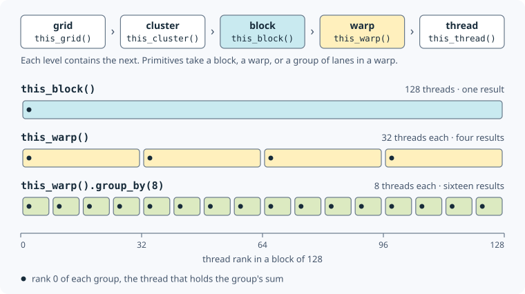
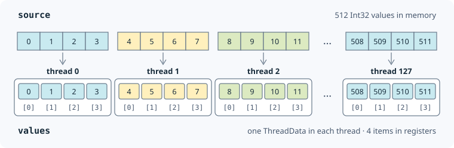
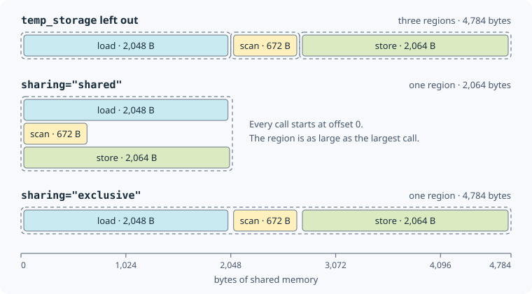
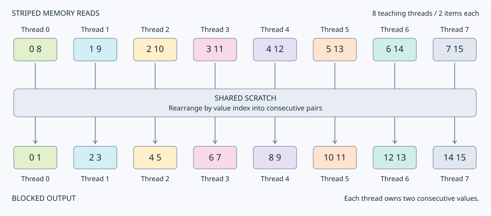
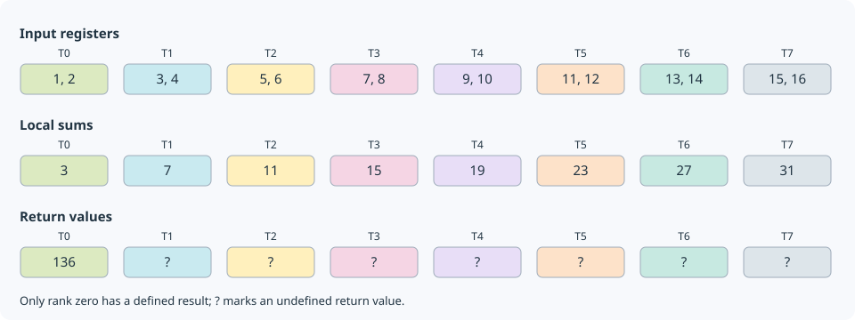
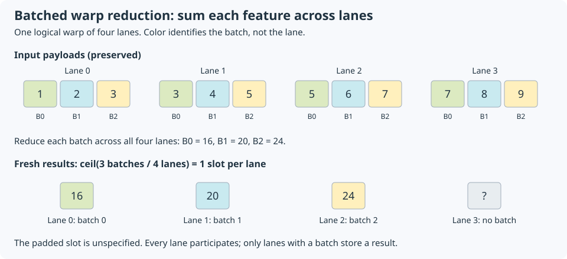
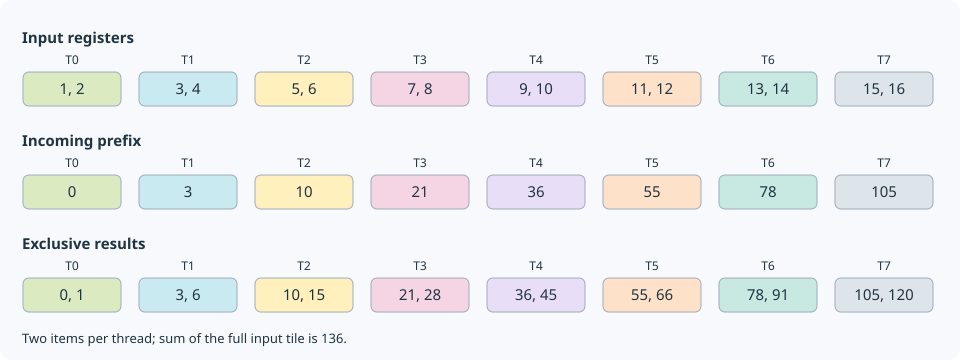
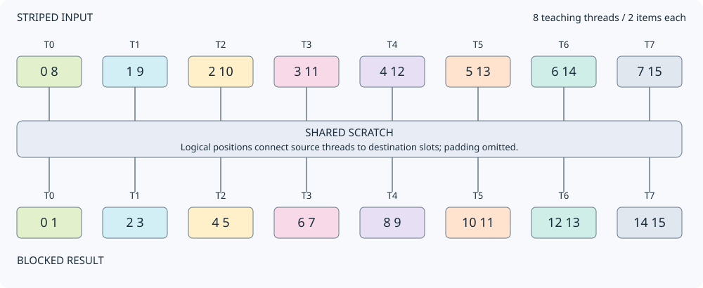
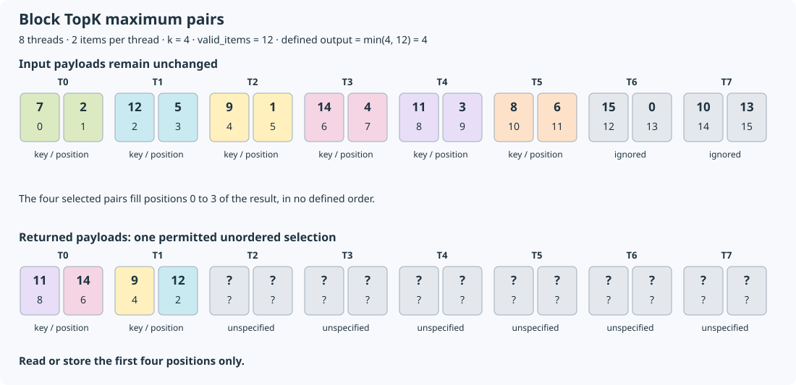
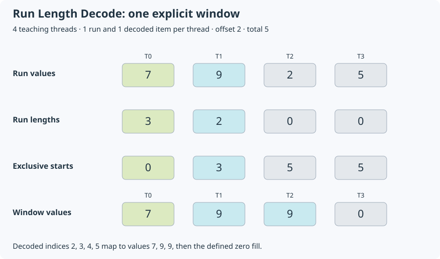

Agents
For a more token-efficient view of this page, read the raw documentation source. Follow its includes and API references for code examples and docstrings.
cuda.coop.cutlass API Reference#
Warning
This is an experimental API and is subject to change.
CUB’s block and warp primitives for kernels written in the CuTe DSL.
Import the package and call its functions inside a kernel:
import cuda.coop.cutlass as coop
@cute.kernel
def prefix_sum(
source: cute.Pointer,
destination: cute.Pointer,
items_per_thread: cutlass.Constexpr,
):
block = coop.this_block()
values = coop.load(block, source, items_per_thread=items_per_thread)
sums = coop.inclusive_sum(block, values)
coop.store(block, destination, sums)
@cute.jit
def launch(
source: cute.Pointer,
destination: cute.Pointer,
items_per_thread: cutlass.Constexpr,
):
kernel = prefix_sum(source, destination, items_per_thread)
kernel.launch(grid=1, block=128)
Every primitive is called the same way:
The first argument is a thread group, the threads that make the call together.
The operands follow by position: the memory to read or write, and each thread’s items as a ThreadData.
Controls follow by keyword.
Each call is single-phase: there is nothing to construct first. The block
size comes from the launch, the element type from the memory or the items,
and the number of items from items_per_thread or the ThreadData.
Scratch
space in shared memory comes from the compiler, or from a
TempStorage that the kernel passes.
Single-phase calls shows the same kernel
written with CUB’s C++ classes.
Arguments that select code are Python values, fixed when the kernel is
compiled: the group, items_per_thread, algorithm, operators and the
options of a TempStorage. A kernel receives such a value as an argument
declared cutlass.Constexpr, as items_per_thread is above.
Controls that describe data can also be CuTe values, read while the kernel
runs: valid_items, offset, oob_default and a scan’s
initial_value are examples. Each entry says what its controls accept.
A for loop over range(...) is a runtime loop, even when its bounds
are Python integers. A runtime loop can repeat one call. A
cutlass.range_constexpr loop is unrolled, so each trip can make a
different call.
Primitives work in a kernel and in any @cute.jit function that the
kernel calls. When CuTe finishes tracing, the package compiles the CUB code
for every call it traced in one NVRTC compilation, and CuTe links the
result into the kernel, where it can be inlined. The compiled code is kept
in a cache on disk, described in Configuration. To launch a kernel
more than once, pass the @cute.jit function that launches it, followed
by that function’s arguments, to cute.compile and keep the callable it
returns.
Checking and tuning a kernel says how to
call it.
The package includes .pyi stubs for type checkers.
Thread groups#
A thread group names the threads that make a call together.
Every primitive takes a group as its first argument. this_block() is the
calling thread’s block, this_warp() is its warp of 32 threads, and
this_warp().group_by(8) is its group of eight neighboring lanes. A lane
is one thread of a warp. This kernel sums the same values over each of the
three:
Full example and test on GitHub
@cute.kernel
def group_sums(source: cute.Pointer, destination: cute.Pointer):
block = coop.this_block()
warp = coop.this_warp()
lanes = warp.group_by(8)
values = coop.load(block, source, items_per_thread=1)
block_sum = coop.sum(block, values) # one sum for all 128 threads
warp_sum = coop.sum(warp, values) # one sum for each warp of 32
lane_sum = coop.sum(lanes, values) # one sum for each group of 8
# The thread with rank 0 in a group holds that group's sum.
thread = block.rank()
output = cute.make_tensor(destination, cute.make_layout(21))
if block.rank() == 0:
output[0] = block_sum
if warp.rank() == 0:
output[1 + thread // 32] = warp_sum
if lanes.rank() == 0:
output[5 + thread // 8] = lane_sum


The three groups of the kernel above, on its block of 128 threads.#
The group selects the CUB class that runs. The primitives in the first five
rows take a block or a warp, reduce_batched takes a warp only, and the
rest take a block only:
Primitive |
|
|
|---|---|---|
|
|
|
|
|
|
|
|
|
|
|
|
|
|
|
|
|
|
|
|
|
|
|
|
The four |
CUB’s block top-k |
|
|
|
|
|
|
|
|
|
These rules hold for every primitive:
Every thread of the group makes the call, including the threads that do not use its result. A warp call involves that warp only, so another warp of the block can skip it.
The launch states the block size with constants, as in
kernel.launch(grid=1, block=128). Each call is compiled for that size, and a kernel whose block size is known only at run time is rejected. When the@cute.jitfunction that launches the kernel receives the block size as an argument, it declares that argumentcutlass.Constexpr. A plain integer argument reaches the launch as a CuTe value, and the block size is then known only at run time.A block can have one, two or three dimensions, and its threads are ranked x first, then y, then z.
histogram, the fourtopkfunctions and the tworun_length_decodefunctions take one-dimensional blocks only.A warp group needs a block whose size is a multiple of 32, so that every warp is complete.
Each group works on its own tile. Load and Store place the tiles of a block’s warps, or of its groups of lanes, one after another. In a kernel with more than one block, pass Load and Store an
offsetcomputed fromcute.arch.block_idx().
this_thread(), this_cluster() and this_grid() name the other
levels of a launch, and this_block().group_by(n) names n whole warps.
No primitive takes these four. Like every group, they answer queries, which
tell a thread where it is. Here a block, a warp and a group of lanes answer
them:
Full example and test on GitHub
block = coop.this_block()
warp = coop.this_warp()
lanes = warp.group_by(8)
thread = block.rank() # 0 to 127: this thread in its block
threads = block.count() # 128: threads in the block
warp_index = block.rank("warp") # 0 to 3: this thread's warp in the block
warps = block.count("warp") # 4: warps in the block
lane = warp.rank() # 0 to 31: this thread in its warp
slot = lanes.rank() # 0 to 7: this thread in its group of eight
lanes_index = lanes.rank("warp") # 0 to 3: this group in its warp
block_index = block.rank("grid") # 0 or 1: this block in a grid of two
rank and count take a level: "thread" (the default), "warp",
"block", "cluster" or "grid". For a level inside the group,
rank is where this thread, or its warp, sits in the group, and count
is how many the group holds. For a level outside the group, rank is
where the group sits in that level, and count is how many such groups
the level holds. A group made with group_by takes the levels up to the
group it splits: "thread" and "warp" for a group of lanes. A query
at the "grid" level needs a launch that states the grid size with
constants, as it does the block size.
The results are CuTe scalars, so a kernel can use them in arithmetic, as an index, or in a condition. A query emits no barrier and uses no shared memory, and only the threads that want the answer need to ask.
sync() is a barrier for the threads of the group:
Group |
|
|---|---|
|
Block barrier |
|
Warp barrier, |
|
Warp barrier for the lanes of that group |
|
Cluster barrier on targets that have one, from |
|
Nothing |
this_grid() and this_block().group_by(n) have no barrier.
- cuda.coop.cutlass.this_block() ThreadGroup#
Return the calling thread’s block.
Block primitives take it as their first argument. Its size comes from the
blockargument of the launch.
- cuda.coop.cutlass.this_warp() ThreadGroup#
Return the calling thread’s warp of 32 threads.
Warp primitives take it as their first argument. The block size must be a multiple of 32, so that every warp is complete.
ThreadGroup.group_bysplits it into smaller groups.
- cuda.coop.cutlass.this_thread() ThreadGroup#
Return the calling thread as a group of one, for queries.
- cuda.coop.cutlass.this_cluster() ThreadGroup#
Return the calling thread’s cluster of blocks, for queries and
sync.The
clusterargument of the launch sets how many blocks a cluster has. Without it, each block is a cluster by itself.
- cuda.coop.cutlass.this_grid() ThreadGroup#
Return every thread of the launch as one group, for queries.
Its
rankandcountreturnUint64. The launch states the grid size with constants, as it does the block size. The grid has no barrier.
- class cuda.coop.cutlass.ThreadGroup(
- kind: str,
- hierarchy: ThreadHierarchy = <factory>,
- parent: ThreadGroup | None = None,
- mapping: GroupByMapping | None = None,
- source: str = 'explicit',
The threads that make a call together.
A kernel gets one from
cuda.coop.cutlass.this_block(),cuda.coop.cutlass.this_warp()or anotherthis_function, and splits a warp or a block withgroup_by(). Creating a group emits no code. A primitive or one of the methods below does.- group_by( ) _ThreadGroupT#
Split a warp into groups of lanes, or a block into groups of warps.
- Parameters:
count (int) – A Python integer. On
this_warp()it is the number of neighboring lanes in each group, at most 32. Onthis_block()it is the number of neighboring warps in each group, sothis_block().group_by(2)is a group of 64 threads.exhaustive (bool, optional) – With the default
True,countmust divide the 32 lanes of the warp, or the number of warps in the block. WithFalse, the lanes or warps left over at the end belong to no group, andis_member()tells a thread whether it is in one.
- Returns:
The calling thread’s group. It cannot be split again.
- Return type:
Notes
The block size must be a multiple of 32. Primitives accept groups of 1, 2, 4, 8, 16 or 32 lanes, which CUB calls logical warps.
cuda.coop.cutlass.reduce()andcuda.coop.cutlass.sum()also accept 17 to 31 lanes, made withexhaustive=False. A group of warps answersrank,countandis_member. Primitives do not take one, and it has nosync.On a group of lanes,
rankandcounttake the levels"thread"and"warp". On a group of warps they take"thread","warp"and"block". Higher levels are rejected.Examples
Sum the first 24 lanes of each warp. The other eight lanes are in no group and skip the call:
Full example and test on GitHub
# One group of 24 lanes in each warp. Lanes 24 to 31 are in no group. lanes = coop.this_warp().group_by(24, exhaustive=False) if lanes.is_member(): total = coop.sum(lanes, values) if lanes.rank() == 0: output[thread // 32] = total
- rank(level='thread')#
Return where this thread, or this group, sits.
- Parameters:
level (str, optional) –
"thread"(the default),"warp","block","cluster"or"grid"."gpu_thread"also means"thread"."grid"needs a launch that states the grid size with constants.- Returns:
For a level inside the group, where this thread, or the warp, block or cluster that holds it, sits in the group.
this_block().rank()is the thread’s position in its block, andthis_block().rank("warp")is its warp’s. For a level outside the group, the group’s position in that level:this_block().rank("grid")is the block’s position in the grid. The result isUint64when the group or the level is the grid.- Return type:
cutlass.Uint32 or cutlass.Uint64
Notes
In a block with more than one dimension, threads are ranked x first:
x + block_x * (y + block_y * z).
- count(level='thread')#
Return the size of the group, or how many such groups there are.
- Parameters:
- Returns:
For a level inside the group, how many threads, warps, blocks or clusters the group holds:
this_block().count()is the block’s thread count andthis_block().count("warp")is its warp count. For a level outside the group, the number of such groups in that level:this_block().count("grid")is the number of blocks in the grid. The result isUint64when the group or the level is the grid.- Return type:
cutlass.Uint32 or cutlass.Uint64
- rank_as(dtype=None, level='thread')#
Return the rank as the integer type you name.
- Parameters:
- Returns:
The rank, cast to the requested type without a range check.
- Return type:
CuTe integer scalar
- count_as(dtype=None, level='thread')#
Return the count as the integer type you name.
- is_member()#
Return whether the calling thread belongs to this group.
- Returns:
One for every thread, except in a group made with
group_by(count, exhaustive=False), where the lanes or warps left over get zero.- Return type:
cutlass.Uint8
Notes
For a group made with
exhaustive=False, call its primitives insideif group.is_member():, so that the threads left over skip them. A left-over thread’srankin the group means nothing.group_by()has an example.
- sync()#
Wait until every thread of the group arrives.
A block waits at a block barrier and a warp at
__syncwarp(). A group of lanes waits for its own lanes only. A cluster waits at a cluster barrier on targets fromsm_90, and at a block barrier on older ones.this_thread().sync()emits nothing. The grid and groups of warps have no barrier, and callingsyncon them is rejected when the kernel is compiled.
- sync_aligned()#
Wait at the aligned form of the group’s barrier.
For a block this is
__syncthreads(), and a cluster has an aligned barrier as well. Use it only where every thread of the group executes this same call. In a branch whose condition differs between threads, usesync(). For a warp or a group of lanes the two methods are the same.
- class cuda.coop.cutlass.ThreadHierarchy#
The grid, cluster and block sizes of the current launch.
Kernels rarely need this class. A group from
cuda.coop.cutlass.this_block(),cuda.coop.cutlass.this_warp()or anotherthis_function already refers to the current launch, and itsrankandcountmethods answer questions about it.ThreadHierarchy()takes no arguments and stands for the launch being compiled. Itsblock_dim,grid_dimandcluster_dimareNone, because the compiler reads the sizes from the launch when a primitive or query needs them.Hierarchyis another name for this class. The matching C++ type is cuda::hierarchy.
- class cuda.coop.cutlass.Hierarchy#
Alias for
ThreadHierarchy.
ThreadData: per-thread payloads and CuTe conversion#
A ThreadData holds one thread’s items, a fixed number of values.
load() reads them from memory into registers and
returns one payload in each thread of the group:


values = coop.load(block, source, items_per_thread=4) on a block of
128 threads.#
A block scan or a sort reads a payload and returns a new one, reduce and
sum return one value, and store() writes a
payload to memory. A kernel can also fill a payload with values it computes.
This kernel squares the items it loaded and sums the squares over the block:
Full example and test on GitHub
@cute.kernel
def sum_of_squares(
source: cute.Pointer,
destination: cute.Pointer,
items_per_thread: cutlass.Constexpr,
):
block = coop.this_block()
values = coop.load(block, source, items_per_thread=items_per_thread)
squares = coop.ThreadData(items_per_thread)
for i in cutlass.range_constexpr(items_per_thread):
squares[i] = values[i] * values[i]
total = coop.sum(block, squares)
if block.rank() == 0:
output = cute.make_tensor(destination, cute.make_layout(1))
output[0] = total
The number of items is fixed when the kernel is compiled.
loadtakes it fromitems_per_thread, a Python integer or a kernel argument declaredcutlass.Constexpr. Later calls take it from the payload, andlen(values)returns it.An index is a Python integer or the variable of a
cutlass.range_constexprloop. Negative indices count from the end.ThreadData(n)starts with no values. Assign every item before a primitive reads the payload.A loaded payload has the element type of the memory it came from. For a payload the kernel fills, a primitive takes the type from the items, which must all have the same type. Wrap an expression in a CUTLASS type, as in
cutlass.Int32(x), to give an item that type.A primitive that returns a payload returns a new one and leaves its input unchanged. Two arguments are written in place:
aggregate_outputof a scan andexclusive_digit_prefixofradix_rank_keys.storewith a transpose algorithm leaves the items of its payload undefined.
Items can be Int8 to Int64, Uint8 to Uint64, Float32 or
Float64. Some primitives accept fewer types, and their entries say
which. CuTe reports unsigned integers behind a cute.Pointer argument as
signed. For those integers, pass dtype to
load() and store(), or
pass a cute.recast_tensor view of the memory.
from_fn() fills a payload from a Python
function of the index. It replaces the loop in the kernel above:
Full example and test on GitHub
squares = coop.ThreadData.from_fn(
items_per_thread, lambda i: values[i] * values[i]
)
A kernel can assign items inside a runtime if or loop, and the new
values are visible afterwards. Every item of the payload must have a value
before the if or loop begins, and every path must leave the payload
with the same element type and alignment.
A primitive that takes one scalar per thread, such as a warp scan, needs the
item itself. load returns a payload even when items_per_thread is 1,
so pass values[0].
CuTe has two register forms of its own, and the methods below copy items to and from both:
A register tensor, made with
cute.make_rmem_tensor:from_register_tensorandto_register_tensor.An immutable
TensorSSA, such as the result oftensor.load():from_vectorandto_tensor_ssa.
Each conversion copies, so a later write to one side leaves the other as it
was. To write a payload into a register tensor that already exists, use
tensor.store(values.to_tensor_ssa(like=tensor)). Primitives other than
load and store also take either CuTe form directly where they read
a payload. Tensor Core and TopK interop is a complete kernel that moves a
Tensor Core accumulator through a payload.
- class cuda.coop.cutlass.ThreadData(
- items_per_thread: int,
- dtype: Any = None,
- *,
- values: tuple[Any, ...] | list[Any] | None = None,
- alignment: int | None = None,
One thread’s items inside a CuTe kernel.
- Parameters:
items_per_thread (int) – Number of items, a positive Python integer.
dtype (type, optional) – Element type, usually left out. Name it with a CUTLASS type such as
cutlass.Int32, a NumPy type, or Pythonintorfloat, which meanInt32andFloat32. Python numbers among the items take this type if it can hold them. Items that already have a CuTe type are not converted and must have exactly this type. Passdtypewhen the items are raw MLIR integers, which have a width and no sign.values (tuple or list, optional) – Initial values, exactly
items_per_threadof them. Without this argument the items have no value until they are assigned.alignment (int, optional) – Smallest byte alignment, a power of two, for register storage made from this payload. That storage is aligned to at least 32 bytes in any case, so only larger values change it. A payload that a primitive returns keeps the alignment of its input.
- dtype#
Element type.
Noneuntil the constructor,load, a conversion or a primitive sets it.- Type:
type or None
Examples
Copy a CuTe register tensor into a payload, change one item, and copy the payload out as an immutable value and as a new register tensor. The original tensor keeps its values:
Full example and test on GitHub
import cutlass from cutlass import cute import cuda.coop.cutlass as coop @cute.kernel def convert_registers(destination: cute.Pointer): thread = cute.arch.thread_idx()[0] original = cute.make_rmem_tensor(2, cutlass.Int32) original[0] = thread * 2 original[1] = thread * 2 + 1 items = coop.ThreadData.from_register_tensor(original) items[0] = items[0] + 10 vector = items.to_tensor_ssa() copied = items.to_register_tensor() copied[1] = copied[1] + 100 output = cute.make_tensor(destination, cute.make_layout(64 * 6)) for item in cutlass.range_constexpr(2): output[thread * 6 + item] = original[item] output[thread * 6 + 2 + item] = vector[item] output[thread * 6 + 4 + item] = copied[item] @cute.jit def launch(destination: cute.Pointer): convert_registers(destination).launch(grid=1, block=64)
- classmethod ThreadData.from_values( ) ThreadData#
Construct a payload from one or more per-thread scalar values.
- Parameters:
*values (scalar) – Initial items, in payload order. At least one value is required.
dtype (type, optional) – Dtype metadata. Values are stored as supplied, without casting.
- Returns:
A new payload containing
len(values)initialized items.- Return type:
- classmethod ThreadData.from_fn( ) ThreadData#
Build a payload by calling a Python function for each index.
- Parameters:
items_per_thread (int) – Number of items, a positive Python integer.
fn (callable) – Called with each index from 0 to
items_per_thread - 1, in order, while the kernel is compiled. It returns the item for that index and may build it from CuTe values.dtype (type, optional) – Element type. Each item is cast to it, which makes
from_fnthe way to change a payload’s element type.
- Returns:
A new payload with every item assigned.
- Return type:
Examples
Square each item of a loaded payload:
Full example and test on GitHub
squares = coop.ThreadData.from_fn( items_per_thread, lambda i: values[i] * values[i] )
- classmethod ThreadData.from_register_tensor( ) ThreadData#
Copy a CuTe register tensor into a per-thread payload.
- Parameters:
fragment (cute.Tensor) – Tensor in CuTe register memory (
rmem). Global- and shared-memory tensors are rejected; load their data first.items_per_thread (int, optional) – Positive compile-time item count. Inferred from the static tensor shape when available. An explicit count must match the inferred count; it is required when inference is unavailable.
dtype (type, optional) – Defaults to
fragment.element_type. An explicit type casts each extracted item.
- Returns:
A new payload in the tensor’s flat integer-index order. Subsequent assignments to either object do not update the other.
- Return type:
- classmethod ThreadData.from_vector( ) ThreadData#
Copy an immutable register value into a per-thread payload.
- Parameters:
vector (cute.TensorSSA or CUTLASS register vector) – Integer-indexable register value. Memory-backed tensors and arrays are rejected. For mutable CuTe
rmemtensors, usefrom_register_tensor().items_per_thread (int, optional) – Positive compile-time item count, normally inferred from
numel()or a static one-dimensional shape. An explicit count must match any inferred count.dtype (type, optional) – Defaults to the value’s dtype metadata. An explicit type casts each extracted item.
- Returns:
A new payload in flat integer-index order. The input is unchanged.
- Return type:
- classmethod ThreadData.from_payload( ) ThreadData#
Adapt a
ThreadDataor CuTe register payload.- Parameters:
payload (ThreadData, cute.Tensor, cute.TensorSSA, or register vector) – Per-thread values. CuTe tensors must use register memory; global/shared tensors and arrays require a load first.
items_per_thread (int, optional) – Positive compile-time item count. If supplied, it must match the existing or inferred count.
dtype (type, optional) – Dtype for conversion. For an existing
ThreadDatawith dtype metadata, this must match that dtype; this method does not recast an already typed payload.
- Returns:
The same object when
payloadis alreadyThreadDataand no dtype change is needed. Supplying a dtype to an untypedThreadDatacreates a new payload. CuTe inputs produce a new payload throughfrom_register_tensor()orfrom_vector().- Return type:
- classmethod ThreadData.load(
- source: ThreadDataLoadSource,
- *,
- items_per_thread: int | None = None,
- dtype: Any = None,
Load a producer-owned source into per-thread registers.
The source must explicitly implement the private
__cuda_coop_thread_data_load__tracing hook. The producer owns any required tensor-memory-to-register copy, including its copy atom, thread partition, readiness, and lifetime. The hook must return aThreadDataor register values thatfrom_payload()takes. The item count must be known when the kernel is compiled, from the result or fromitems_per_thread. The hook is invoked exactly once by each call during DSL tracing; a single-use producer source is responsible for rejecting a second call.Bare memory-backed tensors are intentionally not interpreted here: their address space and shape do not provide enough information to safely select or schedule a register load.
items_per_threadanddtypeare optional and work as they do forfrom_payload().Producer-owned register loads in Advanced topics has a tested producer and the rules for the hook.
- ThreadData.to_tensor_ssa(
- *,
- dtype: Any = None,
- shape: Any = None,
- like: ThreadDataTensorMetadata | None = None,
Export initialized items as an immutable CuTe register value.
- Parameters:
dtype (type, optional) – Element type of the result, a CUTLASS or NumPy numeric type. Left out, it is
like.dtypewhenlikeis given and this payload’sdtypeotherwise. Each item is converted to it. A payload with nodtypeneedsdtypeorlike.shape (int or tuple, optional) – Shape of the result. It is made of positive Python integers, may be nested, and holds exactly
items_per_threaditems. Left out, it islike.shapewhenlikeis given and(items_per_thread,)otherwise.like (ThreadDataTensorMetadata, optional) – An object whose
shapeanddtypegive the shape and the element type of the result. Ashapeordtypeargument takes precedence. The items keep their flat order, and the kernel keeps track of which thread owns which element.
- Returns:
Register values with the requested dtype and shape, in payload item order. The original input fragment’s shape is not retained automatically. Later payload assignments do not change this value.
- Return type:
cute.TensorSSA
- ThreadData.to_register_tensor( ) Any#
Export initialized items to a new mutable CuTe register tensor.
- Parameters:
dtype (type, optional) – Output dtype, with the same rules as
to_tensor_ssa().shape (int or tuple, optional) – Static output shape, with the same rules as
to_tensor_ssa().
- Returns:
A new
rmemtensor containing the payload values. It does not alias the payload or an earlier input fragment. Its storage honors this payload’s minimum alignment. As with other register tensors, the compiler may spill values to local memory.- Return type:
cute.Tensor
TempStorage: temporary storage#
Some primitives need scratch space in shared memory while they run.
A block scan does, and so do the transpose forms of Load and Store. Leave
temp_storage out of a call and the compiler provides the scratch that
call needs and adds a barrier after it.
Pass a TempStorage to choose which calls share
bytes and where the barriers go. Construct it inside the kernel and give the
same object to every call that should use it. Here three calls share one
region. Load and Store use no scratch with their default algorithm, so this
kernel asks for algorithm="transpose".
Full example and test on GitHub
@cute.kernel
def prefix_sum_shared(
source: cute.Pointer,
destination: cute.Pointer,
items_per_thread: cutlass.Constexpr,
):
block = coop.this_block()
scratch = coop.TempStorage(auto_sync=True)
values = coop.load(
block,
source,
items_per_thread=items_per_thread,
algorithm="transpose",
temp_storage=scratch,
)
sums = coop.inclusive_sum(block, values, temp_storage=scratch)
coop.store(
block, destination, sums, algorithm="transpose", temp_storage=scratch
)
sharing sets how the calls are laid out inside the region. The sizes are
those of the kernel above on a block of 128 threads with four Int32 items
each, where Load, Scan and Store need 2,048, 672 and 2,064 bytes with CUB
from CCCL 3.7. Other block shapes, element types and CUB versions give other
sizes.
|
|
|
|---|---|---|
Where a call’s scratch goes |
Offset 0, over the previous call’s |
Its own slice, one per call site |
Size of the region |
The largest call: 2,064 bytes |
All calls together: 4,784 bytes |
When bytes are reused |
At the next call |
When the same call site runs again, as in a runtime loop |


The same three calls, to scale. The top row is the kernel with
temp_storage left out.#
Before scratch is reused, every thread in the block must be finished with
what was there. auto_sync=True adds a block barrier after each call that
used the region, with either layout. The default is auto_sync=False, as
in CUB: you call sync() before the bytes
are reused. This is the body of the same kernel with its barriers written by
hand:
Full example and test on GitHub
scratch = coop.TempStorage()
values = coop.load(
block,
source,
items_per_thread=items_per_thread,
algorithm="transpose",
temp_storage=scratch,
)
# Scan reuses the bytes Load used. Wait until every thread finishes Load.
scratch.sync()
sums = coop.inclusive_sum(block, values, temp_storage=scratch)
# Store reuses the same bytes. Wait until every thread finishes Scan.
scratch.sync()
coop.store(
block, destination, sums, algorithm="transpose", temp_storage=scratch
)
# Store is the last call that uses the scratch, so no barrier follows.
With sharing="exclusive" this kernel needs neither sync, because no
call reuses another call’s bytes. The barriers above are placed for the
scratch. If your threads also pass data to each other through shared memory,
add the barriers that needs.
The kernel below reuses one region on every trip around a runtime loop. Trip
tile loads one tile, adds tile + 1 to each of its items and stores
it, and both calls pass storage. sharing and manual_sync are
arguments of the example’s run_example function, and manual_sync=True
compiles the kernel with auto_sync=False and a storage.sync() after
each of the two calls. _BLOCK is (8, 4, 2), which is 64 threads.
tile_size = 64 * items_per_thread
@cute.kernel
def transform(
source: cute.Pointer,
destination: cute.Pointer,
tiles: cutlass.Int32,
items_per_thread: cutlass.Constexpr,
):
tile_size = 64 * items_per_thread
storage = coop.TempStorage(
sharing=sharing, alignment=1, auto_sync=not manual_sync
)
for tile in range(tiles):
payload = coop.load(
coop.this_block(),
source,
items_per_thread=items_per_thread,
algorithm="transpose",
offset=tile * tile_size,
temp_storage=storage,
)
if cutlass.const_expr(manual_sync):
storage.sync()
for item in cutlass.range_constexpr(items_per_thread):
payload[item] = payload[item] + cutlass.Int32(tile + 1)
coop.store(
coop.this_block(),
destination,
payload,
algorithm="transpose",
offset=tile * tile_size,
temp_storage=storage,
)
if cutlass.const_expr(manual_sync):
storage.sync()
@cute.jit
def launch(
source: cute.Pointer,
destination: cute.Pointer,
tiles: cutlass.Int32,
items_per_thread: cutlass.Constexpr,
):
transform(source, destination, tiles, items_per_thread).launch(
grid=1, block=_BLOCK
)
These block primitives take a temp_storage argument: transpose Load and
Store, Reduce, Scan, Merge Sort, Radix Sort, TopK, Adjacent Difference,
Discontinuity, Histogram and Run Length Decode. Exchange, Shuffle, Radix
Rank and the warp primitives always manage their own scratch.
You can also use the region for your own data.
reserve() returns a typed shared tensor
inside it. release() hands the whole
region back as ordinary shared memory once the primitives are finished with
it. The launch’s shared-memory size includes the region, along with any
tensors from CuTe’s SmemAllocator.
To measure what a call needs in your own kernel, give that call a
TempStorage() of its own and call release() after it. The tensor it
returns holds bytes, so cute.size of it is the call’s scratch size.
cute.arch.dynamic_smem_size() returns the launch’s shared-memory size.
Both are CuTe values, so write them to global memory and read them on the
host.
- class cuda.coop.cutlass.TempStorage(
- size_in_bytes=None,
- *,
- alignment=None,
- auto_sync=False,
- sharing='shared',
Scratch space in shared memory for the primitives of one kernel.
Construct one inside the kernel and pass it as
temp_storageto each primitive that should use it.- size_in_bytes#
Size of the region in bytes.
None, the default, lets the compiler size it for every use, including reservations. An explicit size is a positive number of bytes. One smaller than the uses need is a compile error. The device’s shared-memory limit still applies.- Type:
int or None
- alignment#
Minimum alignment of the region in bytes, a power of two up to 1024. The compiler raises it when a primitive needs more.
- Type:
int or None
- auto_sync#
Trueadds a block barrier after each call that uses the region. The default,False, leaves the barriers to you: callsync()before scratch is reused.NonemeansFalse.- Type:
- sharing#
"shared", the default, places every call and reservation at the start of the region, which is sized for the largest of them."exclusive"gives each call site and reservation its own slice, in the order they appear in the kernel. A call site that runs again, as in a runtime loop, reuses its slice.- Type:
{“shared”, “exclusive”}
Notes
Two objects are two regions, even when their arguments are equal.
An object constructed outside the kernel function works only for calls outside a runtime
ifor loop, and cannot be released.Inside a runtime
ifor loop, keep using the same object. Choosing between two objects at run time, or rebinding the name to another one, is a compile error. An object created and used entirely inside one branch or one loop iteration is fine.To make a call that uses scratch conditional, use an
ifstatement whose condition is the same for every thread in the group. Inside a runtimea if c else bexpression, a block call that takestemp_storageand uses scratch is a compile error.Error messages call a
TempStorageobject a descriptor.
The Developer Guide describes how the compiler sizes and places the region.
- TempStorage.sync()#
Wait at a block barrier before scratch is reused.
Use it with
auto_sync=False, between a call that used the region and the next use of the same bytes. Every thread in the block must reach the call.
- TempStorage.reserve(num_elems, dtype, *, alignment=None)#
Return a one-dimensional shared tensor in this region for your data.
The tensor has
num_elemselements of typedtype.num_elems,dtypeand the optional bytealignmentare compile-time constants. Supported element types are the 8-, 16-, 32- and 64-bit signed and unsigned integers,Float16,BFloat16,Float32andFloat64, or the matching NumPy types.A reservation follows the object’s
sharing. With"shared"it overlaps primitive scratch and other reservations. With"exclusive"it has its own slice. Areservecall inside a runtime loop returns the same bytes on every iteration. OtherTempStorageobjects and tensors from CuTe’sSmemAllocatoroccupy separate bytes.Reservations need
auto_sync=False. With"shared", the next primitive that uses the region overwrites the reservation. Copy the values you still need into registers and callsync()first.syncis only a block barrier. If native code started an asynchronous copy into the tensor, wait for that copy to complete as well.This kernel hands a reserved tensor to native CuTe code, reuses its bytes for a block sum, and checks that a tensor from
SmemAllocatorkeeps its values.@cute.jit def prepare(values: cute.Tensor): thread, _, _ = cute.arch.thread_idx() values[thread] = cutlass.Float32(2 * thread + 1) @cute.kernel def kernel(destination: cute.Pointer): block = coop.this_block() thread = block.rank() storage = coop.TempStorage(sharing="shared", auto_sync=False) workspace = storage.reserve(64, cutlass.Float32, alignment=64) persistent = SmemAllocator().allocate_tensor( cutlass.Float32, cute.make_layout(64), byte_alignment=64 ) persistent[thread] = cutlass.Float32(3 * thread + 7) # reserve() returns an ordinary tensor consumed by native CuTe code. prepare(workspace) storage.sync() value = workspace[63 - thread] # Every thread must finish reading before the sum overwrites these # bytes with its scratch. The input now lives in registers. storage.sync() total = coop.sum(block, value, temp_storage=storage) storage.sync() # Fill the reserved tensor again for the next native step. The tensor # from SmemAllocator kept its values across the sum. workspace[thread] = cutlass.Float32(thread + 101) storage.sync() output = cute.make_tensor(destination, cute.make_layout(129)) if thread == 0: output[0] = total output[1 + thread] = persistent[63 - thread] output[65 + thread] = workspace[63 - thread] @cute.jit def launch(destination: cute.Pointer): kernel(destination).launch(grid=1, block=64)
- TempStorage.release(dtype=None)#
Return the whole region as an ordinary shared tensor.
dtypeis a supported compile-time scalar type. Without it the tensor holds bytes (Uint8). The tensor covers the whole region: all of an explicitsize_in_bytes, or every slice and any padding of an inferred one. The region’s size must be a multiple of the element size and its alignment at least the element’s. The region is aligned for the calls and reservations that use it. To release it as a type with larger elements, or when nothing else uses it, passalignmentof at least the element size toTempStorage(...). An inferred region that nothing uses is empty and is rejected. The object must have been constructed inside the kernel.After
releasethe object is spent, under every name that refers to it. Using it again in a primitive,reserve,syncorreleaseis a compile error. That includes code after anifthat released it in one branch, and the next iteration of a loop that contains therelease. An object constructed inside the loop body is a new one each iteration. Releasing an object in theifbranch and in theelsebranch is accepted, because only one of the two runs.releaseadds no barrier. Every thread must be past the last primitive that used the region before any thread writes through the returned tensor.auto_sync=Trueprovides that barrier, as in the kernel below. Otherwise callsync()beforerelease.This kernel sums a block, then takes the region back and uses it to hand each thread the value of the thread opposite it.
Full example and test on GitHub
@cute.kernel def sum_then_mirror(source: cute.Pointer, destination: cute.Pointer): block = coop.this_block() rank = block.rank() # Ask for 512 bytes: room for one Int32 per thread once the sum is done. scratch = coop.TempStorage(512, auto_sync=True) values = coop.load(block, source, items_per_thread=1) total = coop.sum(block, values, temp_storage=scratch) # The sum is finished. Take the region back as ordinary shared memory. shared = scratch.release(cutlass.Int32) shared[rank] = values[0] block.sync() output = cute.make_tensor(destination, cute.make_layout(129)) output[rank] = shared[127 - rank] if rank == 0: output[128] = total
Load & Store#
Load and Store move a group’s tile between memory and registers.
load() reads a tile and returns each thread’s items
as a payload, and store() writes each thread’s
payload to a tile. Values that are already in registers, in a CuTe register
tensor or a TensorSSA, become a payload through the conversions of
ThreadData.
A tile is the run of consecutive elements that one group reads or
writes in one call, items_per_thread elements for each of its threads:
Group |
Elements in a tile |
Where the tile starts |
|---|---|---|
|
Block size times |
At |
|
32 times |
At |
|
|
At |
offset counts elements from the start of the memory. On a warp or a
group of lanes the compiler adds the tiles of the earlier groups: with G
threads in the group and K items per thread it adds (b // G) * G * K,
where b = x + block_x * (y + block_y * z) is the thread’s rank in the
block. The warps of a block, or its groups of lanes, can therefore all pass
the same offset. Every block of a grid works on the same tiles when it
passes the same offset, so a kernel with more than one block computes
offset from cute.arch.block_idx().
algorithm chooses how the threads reach the tile. It decides the layout
of the payload and whether the call uses
scratch:
|
Groups |
Payload |
Scratch |
Memory access |
|---|---|---|---|---|
|
All |
Blocked |
No |
Each thread reads or writes its own consecutive elements. |
|
All |
Striped |
No |
The thread with rank |
|
All |
Blocked |
No |
As |
|
All |
Blocked |
Yes |
As |
|
Blocks |
Blocked |
Yes |
As |
|
Blocks |
Blocked |
Yes |
As |
Item i of the thread with rank t in its group is tile element
t * K + i in a blocked payload and t + i * G in a
striped one. On a warp or a group of lanes, t is b % G. A
payload keeps no record of its layout, and store reads it in the layout
of its own algorithm. In a group of more than one thread with more than
one item each, a tile loaded with "striped" and stored with "direct"
is therefore written in another order.


load with algorithm="transpose" on eight threads with two items
each. The threads read in striped order, the top row, where thread 0
holds elements 0 and 8. The exchange through scratch gives the blocked
payload of the bottom row, where thread 0 holds elements 0 and 1.
algorithm="striped" returns the top row.#
load takes the element type from the memory and the item count from
items_per_thread. store takes both from the payload. CuTe reports
unsigned integers behind a cute.Pointer argument as signed, and
dtype on both calls declares them unsigned.
- cuda.coop.cutlass.load(
- group: ThreadGroup,
- source: object,
- /,
- *,
- items_per_thread: int,
- dtype: object | None = None,
- alignment: int | None = None,
- algorithm: Literal['direct', 'striped', 'vectorize', 'transpose', 'warp_transpose', 'warp_transpose_timesliced'] = 'direct',
- valid_items: int | integer | CompilerIntegerLike | None = None,
- oob_default: _NumericT | float | None = None,
- offset: int | integer | CompilerIntegerLike | None = None,
- temp_storage: TempStorageLike | None = None,
Read a group’s tile from memory into a payload in each thread.
- Parameters:
group (ThreadGroup) –
this_block(),this_warp(), orthis_warp().group_by(n)withnof 1, 2, 4, 8, 16 or 32. Every thread of the group makes the call and passes the samevalid_items,oob_defaultandoffset. A warp or a group of lanes needs a block whose size is a multiple of 32. The block’s other warps or groups of lanes can skip the call, or make it with other values of those three.source (CuTe pointer or tensor) –
The memory to read, global or shared. It is a CuTe pointer, such as a kernel argument made with
cutlass.cute.runtime.make_ptr, or a tensor whose shape and strides are Python values and form a compact layout:cute.make_tensor(pointer, cute.make_layout(n)), acute.recast_tensorview of it, a shared tensor from CuTe’sSmemAllocator, or a tensor fromTempStorage.reserve. Its element type is one of the ten listed under ThreadData. A register tensor, a tensor with a runtime shape and any other element type are rejected when the kernel is compiled. For unsigned integers behind acute.Pointerargument, passdtype.sourcemust hold every element the call reads. A tensor that is too small is rejected when the kernel is compiled, as long asoffsetandvalid_itemsare Python values or left out. On a warp or a group of lanes, the check covers the tiles of all such groups of the block, including groups that skip the call. A pointer has no size, so nothing is checked.If other threads wrote the elements to shared memory, put a barrier such as
block.sync()between those writes and the call.items_per_thread (int) – The number of items each thread receives, a positive Python integer or a kernel argument declared
cutlass.Constexpr. A CuTe value is rejected when the kernel is compiled.dtype (CUTLASS or NumPy type, optional) –
Declares the integers in
sourceunsigned. CuTe reports integer memory behind acute.Pointerargument as signed, including when the host made the pointer with an unsigned type, and acute.make_tensorview of any pointer is signed too.Uint32data then loads asInt32with no error, and a maximum, a sort or a conversion to a wider type gives the signed answer.Pass the unsigned type of the same width, such as
dtype=cutlass.Uint32for memory that CuTe reports asInt32. The payload has that element type, andoob_defaultis checked against it.dtypecan also repeat the type CuTe reports. Any other type is rejected when the kernel is compiled, sodtypecannot change the width or turn integers into floats.dtypeis not needed for asourcethat already reports the unsigned type, such as acute.recast_tensorview, a tensor fromTempStorage.reserve, or a pointer the kernel made itself withcute.make_ptrand passes unchanged.alignment (int, optional) – The smallest byte alignment, a power of two, of register storage made from the returned payload, as for
alignmentofThreadData. It is a Python integer, orNone(the default) to ask for none. The items, their order and the waysourceis read stay the same.algorithm (str, optional) – A Python string, one of the six names in the
algorithmtable of Load & Store. The default is"direct". A block takes all six. A warp or a group of lanes takes"direct","striped","vectorize"and"transpose"."warp_transpose"and"warp_transpose_timesliced"need a block size that is a multiple of 32. Any other choice is rejected when the kernel is compiled.valid_items (int or CuTe integer, optional) –
The number of elements to read, counted from the start of the group’s tile, from 0 to the size of that tile. Left out, the whole tile is read. An item whose element is at or past the count receives
oob_default. Withoutoob_defaultits value is undefined, so assign it before anything reads it.A Python count out of range is rejected when the kernel is compiled, and a runtime count out of range traps on the device.
oob_default (number or CuTe scalar, optional) – The value for items at or past the count. It needs
valid_items. A Python or NumPy number is fixed when the kernel is compiled. It must be finite and fit the element type. A float needsFloat32orFloat64memory. An integer for such memory must also lie between-2**63and2**64 - 1, so write a default outside that range as a float. A CuTe scalar is computed while the kernel runs and has exactly the payload’s element type. Anything else is rejected when the kernel is compiled.offset (int or CuTe integer, optional) – The number of elements from the start of
sourceto the tile, 0 by default. On a warp or a group of lanes it leads to the tile of the block’s first group, and the compiler adds the tiles of the groups before the calling one. A negative Python integer is rejected when the kernel is compiled, and a negative runtime value traps on the device. A call reads the same tile every time it runs with the same offset, so a loop over tiles computes a new offset on each trip.temp_storage (TempStorage, optional) –
For blocks.
"transpose","warp_transpose"and"warp_transpose_timesliced"use scratch. Leave this out and the compiler provides the scratch and a block barrier after the call. Pass a TempStorage to share the bytes with other calls. A barrier then follows the call only if theTempStoragewas created withauto_sync=True. The other three algorithms use no scratch and no barrier, with or without aTempStorage.Warps and groups of lanes take
None. There,"transpose"uses scratch from the compiler, one slice for each warp or group of lanes, and a warp barrier for that group’s lanes follows the call.
- Returns:
A new payload in each thread, with
items_per_threaditems of the element type ofsource, or ofdtypewhen it is given, in the layout thatalgorithmgives. Withitems_per_thread=1the result is a payload of one item.sourceis only read, and every call returns its own payload.- Return type:
See also
cub::BlockLoad,cub::WarpLoadThe CUB classes behind the call.
Examples
On a block of 64 threads, copy a tile without its last three elements.
loadstarts five elements intosourceand sets the three items at or past the count to 0.storewrites the same number of elements, starting two elements intodestination.Full example and test on GitHub
import cutlass from cutlass import cute import cuda.coop.cutlass as coop @cute.kernel def copy_prefix( source: cute.Pointer, destination: cute.Pointer, items_per_thread: cutlass.Constexpr, ): block = coop.this_block() valid_items = 64 * items_per_thread - 3 values = coop.load( block, source, items_per_thread=items_per_thread, valid_items=valid_items, oob_default=0, offset=5, ) coop.store( block, destination, values, valid_items=valid_items, offset=2, ) @cute.jit def launch( source: cute.Pointer, destination: cute.Pointer, items_per_thread: cutlass.Constexpr, ): copy_prefix(source, destination, items_per_thread).launch( grid=1, block=64 )
The two warps of a block copy one tile each.
_BLOCKis(8, 4, 2), which is 64 threads.warpis 0 in the first warp and 1 in the second. Each warp reads its tile without the last7 + warp * 11elements, a count computed while the kernel runs, and the items at or past the count are set to -1. Both warps pass the same offsets, a_SOURCE_OFFSETof 3 and a_DESTINATION_OFFSETof 5, and the compiler puts the second warp’s tile after the first.storewrites each warp’s whole tile.@cute.kernel def copy_warp_tiles( source: cute.Pointer, destination: cute.Pointer, items_per_thread: cutlass.Constexpr, ): warp_tile = 32 * items_per_thread x, y, z = cute.arch.thread_idx() thread = x + _BLOCK[0] * (y + _BLOCK[1] * z) warp = thread // 32 # Each warp gets its own consecutive tile automatically. The user # offset selects the beginning of the block's collection of tiles. payload = coop.load( coop.this_warp(), source, items_per_thread=items_per_thread, algorithm="transpose", valid_items=cutlass.Int32(warp_tile - 7 - warp * 11), oob_default=-1, offset=_SOURCE_OFFSET, ) coop.store( coop.this_warp(), destination, payload, algorithm="transpose", offset=_DESTINATION_OFFSET, ) @cute.jit def launch( source: cute.Pointer, destination: cute.Pointer, items_per_thread: cutlass.Constexpr, ): copy_warp_tiles(source, destination, items_per_thread).launch( grid=1, block=_BLOCK )
The same copy with groups of eight lanes, where
_WIDTHis 8. The block’s 64 threads form eight groups with one tile each.group_indexnumbers the groups from 0, and each group reads its tile without the last1 + group_indexelements.@cute.kernel def copy_logical_tiles( source: cute.Pointer, destination: cute.Pointer, items_per_thread: cutlass.Constexpr, ): group_tile = _WIDTH * items_per_thread x, y, z = cute.arch.thread_idx() thread = x + _BLOCK[0] * (y + _BLOCK[1] * z) group_index = thread // _WIDTH group = coop.this_warp().group_by(_WIDTH) # The compiler assigns each eight-lane group its own consecutive tile. # valid_items counts elements in that group's tile. payload = coop.load( group, source, items_per_thread=items_per_thread, algorithm="transpose", valid_items=cutlass.Int32(group_tile - 1 - group_index), oob_default=-1, offset=_SOURCE_OFFSET, ) coop.store( group, destination, payload, algorithm="transpose", offset=_DESTINATION_OFFSET, ) @cute.jit def launch( source: cute.Pointer, destination: cute.Pointer, items_per_thread: cutlass.Constexpr, ): copy_logical_tiles(source, destination, items_per_thread).launch( grid=1, block=_BLOCK )
Sort
Uint32keys from one pointer argument into another. CuTe reports both pointers asInt32, so the kernel passesdtype=cutlass.Uint32toloadandstore. Withoutdtypethe keys with the top bit set would sort first, as negative numbers.Full example and test on GitHub
import cutlass from cutlass import cute import cuda.coop.cutlass as coop @cute.kernel def sort_unsigned(source: cute.Pointer, destination: cute.Pointer): block = coop.this_block() keys = coop.load( block, source, items_per_thread=2, dtype=cutlass.Uint32 ) ordered = coop.radix_sort_keys(block, keys) coop.store(block, destination, ordered, dtype=cutlass.Uint32) @cute.jit def launch(source: cute.Pointer, destination: cute.Pointer): sort_unsigned(source, destination).launch(grid=1, block=64)
See also
- cuda.coop.cutlass.store(
- group: ThreadGroup,
- destination: object,
- value: _NumericT | _ReadableThreadDataLike[_NumericT],
- /,
- *,
- dtype: object | None = None,
- algorithm: Literal['direct', 'striped', 'vectorize', 'transpose', 'warp_transpose', 'warp_transpose_timesliced'] = 'direct',
- valid_items: int | integer | CompilerIntegerLike | None = None,
- offset: int | integer | CompilerIntegerLike | None = None,
- temp_storage: TempStorageLike | None = None,
Write each thread’s payload to a group’s tile in memory.
- Parameters:
group (ThreadGroup) – The groups that
load()takes, under the same rules. Every thread of the group makes the call and passes the samevalid_itemsandoffset.destination (CuTe pointer or tensor) – The memory to write, global or shared, in the forms that
loadtakes assourceand with the same check of its size. Its element type, as CuTe reports it or asdtypedeclares it, is the element type ofvalue. Nothing is converted, and two different types are rejected when the kernel is compiled.value (ThreadData or CuTe scalar) –
This thread’s payload. Every item must be assigned, and a payload with an unassigned item is rejected when the kernel is compiled. One scalar per thread, such as
cutlass.Int32(x), is stored as a payload of one item. To store a CuTe register tensor or aTensorSSA, convert it first withThreadData’sfrom_register_tensor()orfrom_vector()."direct","striped"and"vectorize"leave the payload as it was. After"transpose","warp_transpose"or"warp_transpose_timesliced"its items are undefined, so copy the ones the kernel still needs before the call.dtype (CUTLASS or NumPy type, optional) – Declares the integers in
destinationunsigned, under the rules ofdtypeofload. To store an unsigned payload through acute.Pointerargument, pass the payload’s element type, such asdtype=cutlass.Uint32.algorithm (str, optional) – A Python string, a name from the
algorithmtable of Load & Store. It states the layout ofvalueand decides how the tile is written."striped"takes a striped payload, and the other five take a blocked one. The default is"direct". Groups and block sizes limit the choice as they do forload.valid_items (int or CuTe integer, optional) – The number of elements to write, counted from the start of the group’s tile, from 0 to the size of that tile. Left out, the whole tile is written. Elements of
destinationat or past the count keep their values, so a count of 0 writes nothing. A count out of range is handled as it is forload.offset (int or CuTe integer, optional) – The number of elements from the start of
destinationto the tile, 0 by default, under the rules ofoffsetofload.temp_storage (TempStorage, optional) – For blocks, the scratch of the three transpose algorithms, under the rules of
temp_storageofload.
- Return type:
None
See also
cub::BlockStore,cub::WarpStoreThe CUB classes behind the call.
Examples
storebelow writes a block’s tile without its last three elements, starting two elements intodestination. Those three elements ofdestinationkeep the values they had.Full example and test on GitHub
import cutlass from cutlass import cute import cuda.coop.cutlass as coop @cute.kernel def copy_prefix( source: cute.Pointer, destination: cute.Pointer, items_per_thread: cutlass.Constexpr, ): block = coop.this_block() valid_items = 64 * items_per_thread - 3 values = coop.load( block, source, items_per_thread=items_per_thread, valid_items=valid_items, oob_default=0, offset=5, ) coop.store( block, destination, values, valid_items=valid_items, offset=2, ) @cute.jit def launch( source: cute.Pointer, destination: cute.Pointer, items_per_thread: cutlass.Constexpr, ): copy_prefix(source, destination, items_per_thread).launch( grid=1, block=64 )
See also
Reduction#
A reduction combines the values of a group’s threads into one result.
Each thread passes one scalar or a payload, and every item of every payload goes into the result. The thread with rank 0 in the group receives it: the first thread of a block, lane 0 of a warp, and the first lane of each group of lanes.


sum over eight threads with two items each. Each thread adds its own
items, and the group combines the eight sums into 136. Only thread 0
holds that result.#
reduce takes the operator as binary_op, and sum is reduce
with addition. There are seven built-in operators. Each has a name, other
names that mean the same, and functions that select it:
Operator |
Other names |
Functions |
|---|---|---|
|
|
|
|
|
|
|
|
|
|
|
|
|
|
|
|
|
|
|
|
|
Both functions take these controls:
Control |
Groups |
What it does |
|---|---|---|
|
All |
Reduces the scalars of the first |
|
Blocks |
Selects |
|
Blocks |
Puts the call’s scratch in a TempStorage. |
reduce_batched(), further down, reduces item 0 of
every lane, item 1 of every lane, and so on, and gives one result for each
item of a lane’s payload.
- cuda.coop.cutlass.reduce(
- group: ThreadGroup,
- value: _ReadableThreadDataLike[_ItemT] | _ItemT | CutlassTensorSample | CutlassTensorSSASample,
- /,
- *,
- binary_op: Literal['+', 'sum', 'add', 'plus', '*', 'mul', 'multiply', 'multiplies', 'min', 'minimum', 'max', 'maximum', '&', 'bit_and', '|', 'bit_or', '^', 'bit_xor'] | DeviceOperator | Callable[[object, object], object] | None = None,
- valid_items: int | integer | CompilerIntegerLike | None = None,
- algorithm: Literal['raking_commutative_only', 'raking', 'warp_reductions'] | None = None,
- temp_storage: TempStorageLike | None = None,
Combine a group’s values into one result with an operator.
The operator combines every value the group’s threads pass, or the values of the first
valid_itemsthreads. The thread with rank 0 in the group receives the result.- Parameters:
group (ThreadGroup) –
this_block(),this_warp(), orthis_warp().group_by(n)withnof 1, 2, 4, 8, 16 or 32, or from 17 to 31. Every thread of the group makes the call, on every trip of a loop that contains it. A warp group needs a block whose size is a multiple of 32.A group of 17 to 31 lanes is lanes 0 to
n - 1of each warp. Make it withgroup_by(n, exhaustive=False)and put the call insideif group.is_member():, so that the other lanes skip it.group_by()has an example.value (scalar, ThreadData, CuTe register tensor or TensorSSA) – One scalar per thread or a payload. Every item of a payload goes into the result. A register tensor or
TensorSSAis read as a payload. A scalar or an item has one of the ten element types listed under ThreadData. A Python integer passed as the scalar is taken asInt32and a Python float asFloat32.binary_op (str, function or DeviceOperator, optional) –
The operator, sum by default. A Python value: a name or a function from the table of operators under Reduction. The three bitwise operators need an integer type. On floats,
"min"and"max"followfminandfmax: a number wins over NaN, and the result is NaN only when every value that goes into it is NaN.A
DeviceOperatorfromcompile_operator()runs your own associative function on the element type ofvalue. Any other function is rejected when the kernel is compiled, Python’sminandmaxincluded: write"min"and"max".valid_items (int or CuTe integer, optional) – The number of threads whose values go into the result, counted from rank 0. It is from one to the group’s size and the same in every thread.
valid_itemsneeds a scalar from each thread, so passvalues[0]for a payload of one item. Every thread still makes the call. A Python count out of range is rejected when the kernel is compiled, and a runtime count out of range traps on the device.None, the default, takes every thread’s value.algorithm (str, optional) – For blocks. A Python string.
"warp_reductions", the default, is CUB’s low-latency algorithm."raking"is CUB’s high-throughput algorithm."raking_commutative_only"is the raking algorithm for commutative operators: it takes the seven built-in operators, and aDeviceOperatoris rejected with it when the kernel is compiled. Warps and groups of lanes takeNone.temp_storage (TempStorage, optional) – For blocks. Leave this out and the compiler provides the call’s scratch and a barrier after the call. Pass a TempStorage to share the bytes with other calls, such as Load and Store. A barrier then follows the call only if the
TempStoragewas created withauto_sync=True. Warps and groups of lanes takeNone.
- Returns:
The result, in the element type of
value. Only the thread with rank 0 in the group holds it: the first thread of a block, lane 0 of a warp, the first lane of each group of lanes. The value in every other thread is undefined. The input keeps its values.- Return type:
CuTe scalar
Notes
A reduction regroups its operations, so the operator must be associative. Floating-point results can differ from a sequential loop, and integer results are computed in the element type.
See also
cub::BlockReduce,cub::WarpReduceThe CUB classes behind the call.
Examples
Sum and maximum of one payload over a block of 64 threads. The thread with rank 0 stores both results.
Full example and test on GitHub
import cutlass from cutlass import cute import cuda.coop.cutlass as coop @cute.kernel def summarize( source: cute.Pointer, totals: cute.Pointer, maxima: cute.Pointer, items_per_thread: cutlass.Constexpr, ): block = coop.this_block() values = coop.load(block, source, items_per_thread=items_per_thread) total = coop.sum(block, values) maximum = coop.reduce(block, values, binary_op="max") total_output = cute.make_tensor(totals, cute.make_layout(1)) maximum_output = cute.make_tensor(maxima, cute.make_layout(1)) if block.rank() == 0: total_output[0] = total maximum_output[0] = maximum @cute.jit def launch( source: cute.Pointer, totals: cute.Pointer, maxima: cute.Pointer, items_per_thread: cutlass.Constexpr, ): summarize(source, totals, maxima, items_per_thread).launch( grid=1, block=64 )
Three reductions in one kernel.
_THREADSis 64 and_BLOCKis(8, 4, 2).totalis the sum of every item in the block.maximumis the largestpayload[0]in each group of eight lanes.prefixis the sum ofpayload[0]over the 23 threads with the lowest rank. The thread with rank 0 in the block storestotalandprefix, and the first lane of each group stores itsmaximum.@cute.kernel def reduce_tiles( source: cute.Pointer, destination: cute.Pointer, items_per_thread: cutlass.Constexpr, ): tile_size = _THREADS * items_per_thread block = coop.this_block() thread = block.rank() lanes = coop.this_warp().group_by(8) inputs = cute.make_tensor(source, cute.make_layout(tile_size)) outputs = cute.make_tensor( destination, cute.make_layout(_THREADS // 8 + 2) ) payload = coop.ThreadData(items_per_thread) for item in cutlass.range_constexpr(items_per_thread): payload[item] = inputs[thread * items_per_thread + item] total = coop.sum(block, payload) maximum = coop.reduce(lanes, payload[0], binary_op="max") prefix = coop.sum(block, payload[0], valid_items=23) if thread == 0: outputs[0] = total outputs[_THREADS // 8 + 1] = prefix if lanes.rank() == 0: outputs[1 + thread // 8] = maximum @cute.jit def launch( source: cute.Pointer, destination: cute.Pointer, items_per_thread: cutlass.Constexpr, ): reduce_tiles(source, destination, items_per_thread).launch( grid=1, block=_BLOCK )
See also
- cuda.coop.cutlass.sum(
- group: ThreadGroup,
- value: _ReadableThreadDataLike[_ItemT] | _ItemT | CutlassTensorSample | CutlassTensorSSASample,
- /,
- *,
- valid_items: int | integer | CompilerIntegerLike | None = None,
- algorithm: Literal['raking_commutative_only', 'raking', 'warp_reductions'] | None = None,
- temp_storage: TempStorageLike | None = None,
Add a group’s values into one result.
The same as
reduce()withbinary_op="sum", with the same parameters apart frombinary_op.- Returns:
The sum, in the element type of
value. Only the thread with rank 0 in the group holds it. The input keeps its values.- Return type:
CuTe scalar
See also
cub::BlockReduce,cub::WarpReduceThe CUB classes behind the call.
Examples
totalbelow is the sum of every item in a block of 64 threads.Full example and test on GitHub
import cutlass from cutlass import cute import cuda.coop.cutlass as coop @cute.kernel def summarize( source: cute.Pointer, totals: cute.Pointer, maxima: cute.Pointer, items_per_thread: cutlass.Constexpr, ): block = coop.this_block() values = coop.load(block, source, items_per_thread=items_per_thread) total = coop.sum(block, values) maximum = coop.reduce(block, values, binary_op="max") total_output = cute.make_tensor(totals, cute.make_layout(1)) maximum_output = cute.make_tensor(maxima, cute.make_layout(1)) if block.rank() == 0: total_output[0] = total maximum_output[0] = maximum @cute.jit def launch( source: cute.Pointer, totals: cute.Pointer, maxima: cute.Pointer, items_per_thread: cutlass.Constexpr, ): summarize(source, totals, maxima, items_per_thread).launch( grid=1, block=64 )
See also
A batched reduction gives one result for each item of a lane’s payload.
Item b of every lane belongs to batch b, and
reduce_batched() reduces each batch across the
lanes of a warp or of a group of lanes. A payload of three items gives three
results, where reduce() gives one.


Three batches over a group of four lanes. The sums are 16, 20 and 24. Lanes 0, 1 and 2 each hold one of them, and lane 3 holds no result. The picture calls the group a logical warp and an item a slot.#
Each result is in one lane. With B batches and W lanes, every lane
gets a payload of ceil(B / W) items back, and output_layout sets
which batches a lane holds. Ten batches over four lanes give three items
per lane:
|
Lane 0 |
Lane 1 |
Lane 2 |
Lane 3 |
|---|---|---|---|---|
|
0, 4, 8 |
1, 5, 9 |
2, 6, none |
3, 7, none |
|
0, 1, 2 |
3, 4, 5 |
6, 7, 8 |
9, none, none |
An item marked “none” has no batch, and its value is undefined.
- cuda.coop.cutlass.reduce_batched(
- group: ThreadGroup,
- value: _ReadableThreadDataLike[_ItemT] | CutlassTensorSample | CutlassTensorSSASample,
- /,
- *,
- binary_op: Literal['+', 'sum', 'add', 'plus', '*', 'mul', 'multiply', 'multiplies', 'min', 'minimum', 'max', 'maximum', '&', 'bit_and', '|', 'bit_or', '^', 'bit_xor'] | Callable[[object, object], object] | None = None,
- output_layout: Literal['striped', 'blocked'] = 'striped',
Reduce each batch across the lanes of a warp or a group of lanes.
Item
bof every lane’s payload is batchb. Each batch is reduced withbinary_op, and its result goes to one lane.- Parameters:
group (ThreadGroup) –
this_warp(), orthis_warp().group_by(n)withnof 1, 2, 4, 8, 16 or 32. Every lane of the group makes the call, including a lane that receives no result. The other groups of lanes of the warp can skip the call. The block’s size must be a multiple of 32.value (ThreadData, CuTe register tensor or TensorSSA) – A payload of
Bitems, one for each batch. A register tensor orTensorSSAis read as a payload. An item has one of the ten element types listed under ThreadData.binary_op (str or function, optional) – The operator, sum by default. A Python value: a name or a function from the table of operators under Reduction. The rules that
reduce()gives for bitwise operators and for NaN hold here too. The seven built-in operators are the only ones this call takes, and aDeviceOperatoris rejected when the kernel is compiled.output_layout ({"striped", "blocked"}, optional) – A Python string that sets which batch each item of the result holds.
Wis the number of lanes in the group, andris this lane’s rank in it. With"striped", the default, itemiholds batchr + i * W. With"blocked", itemiholds batchr * ceil(B / W) + i. WhenBis at mostWthe two are the same: lanerholds batchr.
- Returns:
A new payload of
ceil(B / W)items, with the element type and alignment ofvalue. An item whose batch number is belowBholds that batch’s result. Every other item is undefined, so test the batch number before reading an item. The input keeps its values.- Return type:
Notes
The lanes combine their values in registers. The call uses no scratch and adds no barrier, so it takes no
temp_storage.Integer results are computed in the element type.
See also
cub::WarpReduceBatchedThe CUB class behind the call.
Examples
Sum each batch over each of the two warps of a 64-thread block. The layout is striped, so
totals[item]holds the sum of batchwarp.rank() + item * 32. The kernel names that numberbatch. A lane stores the sum only whenbatchis belowitems_per_thread, the number of batches.Full example and test on GitHub
import cutlass from cutlass import cute import cuda.coop.cutlass as coop @cute.kernel def sum_columns( source: cute.Pointer, destination: cute.Pointer, items_per_thread: cutlass.Constexpr, ): block = coop.this_block() warp = coop.this_warp() values = coop.load(block, source, items_per_thread=items_per_thread) totals = coop.reduce_batched(warp, values) output = cute.make_tensor( destination, cute.make_layout(2 * items_per_thread) ) for item in cutlass.range_constexpr((items_per_thread + 31) // 32): batch = warp.rank() + item * 32 if batch < items_per_thread: index = block.rank() // 32 * items_per_thread + batch output[index] = totals[item] @cute.jit def launch( source: cute.Pointer, destination: cute.Pointer, items_per_thread: cutlass.Constexpr, ): sum_columns(source, destination, items_per_thread).launch( grid=1, block=64 )
See also
Scan#
A scan gives each item the running result of the items before it.
Items are ordered across the group thread by thread: all of thread 0’s items, then thread 1’s, and so on. An exclusive scan leaves each item out of its own result, and an inclusive scan includes it.


exclusive_sum over eight threads with two items each. The middle row
is the sum of all earlier threads’ items. inclusive_sum of the same
values is 1, 3, 6, 10 and so on, up to 136.#
scan takes every choice as an argument, and the four helpers make some
of the choices for you:
Function |
Mode |
Operator |
Starts from |
|---|---|---|---|
|
|
|
|
|
Exclusive |
|
|
|
Inclusive |
|
The first item |
|
Exclusive |
Sum |
Zero |
|
Inclusive |
Sum |
The first item |
On a block, each thread passes a payload or one scalar and gets the same form back. On a warp or a group of lanes, each thread passes one scalar. All five functions take these controls:
Control |
Groups |
What it does |
|---|---|---|
|
All |
Gives every thread the result of combining the inputs that were scanned. |
|
Warps and groups of lanes |
Scans only the first |
|
Blocks |
Selects |
|
Blocks |
Puts the call’s scratch in a TempStorage. |
Each group scans by itself, and a scan in a loop starts again on every
trip. To continue one scan across tiles, start each tile from the total so
far. In this kernel aggregate_output returns each tile’s total and
initial_value passes the running total to the next tile:
Full example and test on GitHub
import cutlass
from cutlass import cute
import cuda.coop.cutlass as coop
@cute.kernel
def running_sum(
source: cute.Pointer, destination: cute.Pointer, tiles: cutlass.Int32
):
block = coop.this_block()
total = cutlass.Int32(0)
for tile in cutlass.range(tiles):
offset = tile * 256
values = coop.load(block, source, items_per_thread=4, offset=offset)
# Start this tile's sums from the total of the tiles before it.
tile_total = coop.ThreadData(1)
sums = coop.exclusive_scan(
block, values, initial_value=total, aggregate_output=tile_total
)
coop.store(block, destination, sums, offset=offset)
total = total + tile_total[0]
@cute.jit
def launch(
source: cute.Pointer, destination: cute.Pointer, tiles: cutlass.Int32
):
running_sum(source, destination, tiles).launch(grid=1, block=64)
A scan reads a payload thread by thread, in blocked order, whichever
call made the payload. If the payload was loaded with
algorithm="striped", run it through
exchange() before scanning it.
- cuda.coop.cutlass.scan(
- group: ThreadGroup,
- value: _ReadableThreadDataLike[_ItemT] | CutlassTensorSample | CutlassTensorSSASample | _ItemT,
- /,
- *,
- mode: Literal['exclusive', 'inclusive'] = 'exclusive',
- scan_op: Literal['+', 'sum', 'add', 'plus'] | Literal['*', 'mul', 'multiply', 'multiplies', 'min', 'minimum', 'max', 'maximum', '&', 'bit_and', '|', 'bit_or', '^', 'bit_xor'] | DeviceOperator | Callable[[object, object], object] | None = None,
- initial_value: int | float | int8 | uint8 | int16 | uint16 | int32 | uint32 | int64 | uint64 | float32 | float64 | CompilerScalarLike | None = None,
- algorithm: Literal['raking', 'raking_memoize', 'warp_scans'] | None = None,
- temp_storage: TempStorageLike | None = None,
- valid_items: int | integer | CompilerIntegerLike | None = None,
- aggregate_output: ThreadDataLike[Any] | None = None,
Scan a group’s values with an operator.
Each result combines the items before it with
scan_op. Exclusive mode starts frominitial_valueand leaves the item itself out. Inclusive mode includes it. On a block, items are ordered thread by thread, by the threads’ rank in the block.- Parameters:
group (ThreadGroup) –
this_block(),this_warp(), orthis_warp().group_by(n)withnof 1, 2, 4, 8, 16 or 32. Every thread of the group makes the call, on every trip of a loop that contains it. A warp group needs a block whose size is a multiple of 32.value (scalar, ThreadData, CuTe register tensor or TensorSSA) – On a block, one scalar per thread or a payload, with the same element type and item count in every thread. A register tensor or
TensorSSAis read as a payload, and the result is aThreadDatathatto_register_tensororto_tensor_ssaconverts back. On a warp or a group of lanes, one scalar per thread: passvalues[0]for a payload of one item. A scalar or an item has one of the ten element types listed under ThreadData.mode ({"exclusive", "inclusive"}, optional) – A Python string. The default is
"exclusive".scan_op (str, function or DeviceOperator, optional) – The operator, sum by default. It takes the same seven operators as
reduce():"sum","multiplies","min","max","bit_and","bit_or"and"bit_xor", or the matching function fromoperatoror NumPy, such asoperator.addornumpy.maximum. The three bitwise operators need an integer type. On floats,"min"and"max"followfminandfmax, so a number wins over NaN. ADeviceOperatorfromcompile_operator()runs your own associative function on the element type ofvalue.initial_value (scalar, optional) –
The value an exclusive scan starts from. It is the first result, and every later result includes it: with
"max"and an initial value of 10, every result is at least 10. A sum starts from zero when it is left out. Every other operator needs it. Inclusive mode takesNone.A CuTe or NumPy scalar must have the element type of
value. A Python integer must fit that type. A Python float needs a floating type and must be finite, so start a floating"min"from a typed infinity such asnumpy.float32(numpy.inf). The value can be computed while the kernel runs, and every thread of the group passes the same one.valid_items (int or CuTe integer, optional) – For warps and groups of lanes. The number of lanes that contribute, from one to the group’s size, the same in every lane. Every lane still makes the call. Lanes at or past the count get no defined result. A Python count out of range is rejected when the kernel is compiled, and a runtime count out of range traps on the device. Blocks take
None.aggregate_output (ThreadData, optional) – A payload of one item, such as
coop.ThreadData(1), that receives the result of combining the inputs that were scanned. The result has the element type ofvalue, so leave the payload’sdtypeout or give that type. Every thread receives it. It leaves outinitial_valueand, withvalid_items, the lanes at or past the count. Inside a runtimeifor loop, create the payload there and read its item there, as in this FAQ.algorithm (str, optional) – For blocks.
"raking", the default, is CUB’s high-throughput algorithm."raking_memoize"is the same with fewer shared-memory reads and more registers."warp_scans"is CUB’s low-latency algorithm and needs a block size that is a multiple of 32. Warps and groups of lanes takeNone.temp_storage (TempStorage, optional) – For blocks. Every block algorithm uses scratch. Leave this out and the compiler provides the scratch and a barrier after the call. Pass a TempStorage to share the bytes with other calls, such as Load and Store. A barrier then follows the call only if the
TempStoragewas created withauto_sync=True. Warps and groups of lanes takeNone.
- Returns:
This thread’s results, in the element type of
value. A scalar gives a scalar. A payload gives a new payload with the same item count and alignment, and the input keeps its values.- Return type:
CuTe scalar or cuda.coop.cutlass.ThreadData
Notes
A scan regroups its operations, so the operator must be associative. It need not be commutative. Floating-point results can differ from a sequential loop, and integer results are computed in the element type.
CUB’s prefix callbacks have no counterpart here. The running-total kernel at the top of the Scan section does their usual job.
See also
cub::BlockScan,cub::WarpScanThe CUB classes behind the call.
Examples
Four scans of one payload: a sum that starts from seven, a running maximum, and the two sum helpers. The calls share one
TempStorage.Full example and test on GitHub
import cutlass from cutlass import cute import cuda.coop.cutlass as coop @cute.kernel def prefixes( source: cute.Pointer, seeded: cute.Pointer, maxima: cute.Pointer, exclusive: cute.Pointer, inclusive: cute.Pointer, items_per_thread: cutlass.Constexpr, ): block = coop.this_block() values = coop.load(block, source, items_per_thread=items_per_thread) scratch = coop.TempStorage(auto_sync=True) seeded_sums = coop.scan( block, values, initial_value=7, temp_storage=scratch ) running_maxima = coop.inclusive_scan( block, values, scan_op="max", temp_storage=scratch ) before = coop.exclusive_sum(block, values, temp_storage=scratch) through = coop.inclusive_sum(block, values, temp_storage=scratch) coop.store(block, seeded, seeded_sums) coop.store(block, maxima, running_maxima) coop.store(block, exclusive, before) coop.store(block, inclusive, through) @cute.jit def launch( source: cute.Pointer, seeded: cute.Pointer, maxima: cute.Pointer, exclusive: cute.Pointer, inclusive: cute.Pointer, items_per_thread: cutlass.Constexpr, ): prefixes( source, seeded, maxima, exclusive, inclusive, items_per_thread ).launch(grid=1, block=64)
See also
- cuda.coop.cutlass.exclusive_sum(
- group: ThreadGroup,
- value: _ReadableThreadDataLike[_ItemT] | CutlassTensorSample | CutlassTensorSSASample | _ItemT,
- /,
- *,
- algorithm: Literal['raking', 'raking_memoize', 'warp_scans'] | None = None,
- temp_storage: TempStorageLike | None = None,
- valid_items: int | integer | CompilerIntegerLike | None = None,
- aggregate_output: ThreadDataLike[Any] | None = None,
Sum the items before each item, starting from zero.
The same as
scan()with its defaults. For a sum that starts from another value, passinitial_valuetoexclusive_scan().- Returns:
For each item, the sum of the items before it. A payload gives a new payload. With
valid_items, only lanes below the count have a defined result.- Return type:
CuTe scalar or cuda.coop.cutlass.ThreadData
See also
cub::BlockScan,cub::WarpScanThe CUB classes behind the call.
Examples
beforebelow holds the exclusive sums.Full example and test on GitHub
import cutlass from cutlass import cute import cuda.coop.cutlass as coop @cute.kernel def prefixes( source: cute.Pointer, seeded: cute.Pointer, maxima: cute.Pointer, exclusive: cute.Pointer, inclusive: cute.Pointer, items_per_thread: cutlass.Constexpr, ): block = coop.this_block() values = coop.load(block, source, items_per_thread=items_per_thread) scratch = coop.TempStorage(auto_sync=True) seeded_sums = coop.scan( block, values, initial_value=7, temp_storage=scratch ) running_maxima = coop.inclusive_scan( block, values, scan_op="max", temp_storage=scratch ) before = coop.exclusive_sum(block, values, temp_storage=scratch) through = coop.inclusive_sum(block, values, temp_storage=scratch) coop.store(block, seeded, seeded_sums) coop.store(block, maxima, running_maxima) coop.store(block, exclusive, before) coop.store(block, inclusive, through) @cute.jit def launch( source: cute.Pointer, seeded: cute.Pointer, maxima: cute.Pointer, exclusive: cute.Pointer, inclusive: cute.Pointer, items_per_thread: cutlass.Constexpr, ): prefixes( source, seeded, maxima, exclusive, inclusive, items_per_thread ).launch(grid=1, block=64)
See also
- cuda.coop.cutlass.inclusive_sum(
- group: ThreadGroup,
- value: _ReadableThreadDataLike[_ItemT] | CutlassTensorSample | CutlassTensorSSASample | _ItemT,
- /,
- *,
- algorithm: Literal['raking', 'raking_memoize', 'warp_scans'] | None = None,
- temp_storage: TempStorageLike | None = None,
- valid_items: int | integer | CompilerIntegerLike | None = None,
- aggregate_output: ThreadDataLike[Any] | None = None,
Sum each item and the items before it.
The same as
scan()in inclusive mode with the default operator.- Returns:
For each item, the sum of the items up to and including it. A payload gives a new payload. With
valid_items, only lanes below the count have a defined result.- Return type:
CuTe scalar or cuda.coop.cutlass.ThreadData
See also
cub::BlockScan,cub::WarpScanThe CUB classes behind the call.
Examples
throughbelow holds the inclusive sums. The first program in the Programming Guide is a whole kernel built on this call.Full example and test on GitHub
import cutlass from cutlass import cute import cuda.coop.cutlass as coop @cute.kernel def prefixes( source: cute.Pointer, seeded: cute.Pointer, maxima: cute.Pointer, exclusive: cute.Pointer, inclusive: cute.Pointer, items_per_thread: cutlass.Constexpr, ): block = coop.this_block() values = coop.load(block, source, items_per_thread=items_per_thread) scratch = coop.TempStorage(auto_sync=True) seeded_sums = coop.scan( block, values, initial_value=7, temp_storage=scratch ) running_maxima = coop.inclusive_scan( block, values, scan_op="max", temp_storage=scratch ) before = coop.exclusive_sum(block, values, temp_storage=scratch) through = coop.inclusive_sum(block, values, temp_storage=scratch) coop.store(block, seeded, seeded_sums) coop.store(block, maxima, running_maxima) coop.store(block, exclusive, before) coop.store(block, inclusive, through) @cute.jit def launch( source: cute.Pointer, seeded: cute.Pointer, maxima: cute.Pointer, exclusive: cute.Pointer, inclusive: cute.Pointer, items_per_thread: cutlass.Constexpr, ): prefixes( source, seeded, maxima, exclusive, inclusive, items_per_thread ).launch(grid=1, block=64)
See also
- cuda.coop.cutlass.exclusive_scan(
- group: ThreadGroup,
- value: _ReadableThreadDataLike[_ItemT] | CutlassTensorSample | CutlassTensorSSASample | _ItemT,
- /,
- *,
- scan_op: Literal['+', 'sum', 'add', 'plus'] | Literal['*', 'mul', 'multiply', 'multiplies', 'min', 'minimum', 'max', 'maximum', '&', 'bit_and', '|', 'bit_or', '^', 'bit_xor'] | DeviceOperator | Callable[[object, object], object] | None = None,
- initial_value: int | float | int8 | uint8 | int16 | uint16 | int32 | uint32 | int64 | uint64 | float32 | float64 | CompilerScalarLike | None = None,
- algorithm: Literal['raking', 'raking_memoize', 'warp_scans'] | None = None,
- temp_storage: TempStorageLike | None = None,
- valid_items: int | integer | CompilerIntegerLike | None = None,
- aggregate_output: ThreadDataLike[Any] | None = None,
Combine the items before each item, starting from
initial_value.The same as
scan()in exclusive mode, with the same parameters apart frommode. A sum starts from zero wheninitial_valueis left out, and every other operator needs it.- Returns:
For each item,
initial_valuecombined with the items before it. A payload gives a new payload. Withvalid_items, only lanes below the count have a defined result.- Return type:
CuTe scalar or cuda.coop.cutlass.ThreadData
See also
cub::BlockScan,cub::WarpScanThe CUB classes behind the call.
Examples
In each group of eight lanes, sum the first five lanes, with an initial value of seven. Every lane makes the call and receives the sum of those five lanes, without the seven, in
aggregate. Only those five lanes store a result.operator.addselects the built-in sum.Full example and test on GitHub
import operator from cutlass import cute import cuda.coop.cutlass as coop @cute.kernel def scan_prefix( source: cute.Pointer, destination: cute.Pointer, aggregates: cute.Pointer, ): thread = coop.this_block().rank() group = coop.this_warp().group_by(8) inputs = cute.make_tensor(source, cute.make_layout(64)) outputs = cute.make_tensor(destination, cute.make_layout(64)) totals = cute.make_tensor(aggregates, cute.make_layout(64)) aggregate = coop.ThreadData(items_per_thread=1) result = coop.exclusive_scan( group, inputs[thread], scan_op=operator.add, initial_value=7, valid_items=5, aggregate_output=aggregate, ) if group.rank() < 5: outputs[thread] = result totals[thread] = aggregate[0] @cute.jit def launch( source: cute.Pointer, destination: cute.Pointer, aggregates: cute.Pointer, ): scan_prefix(source, destination, aggregates).launch(grid=1, block=64)
See also
- cuda.coop.cutlass.inclusive_scan(
- group: ThreadGroup,
- value: _ReadableThreadDataLike[_ItemT] | CutlassTensorSample | CutlassTensorSSASample | _ItemT,
- /,
- *,
- scan_op: Literal['+', 'sum', 'add', 'plus'] | Literal['*', 'mul', 'multiply', 'multiplies', 'min', 'minimum', 'max', 'maximum', '&', 'bit_and', '|', 'bit_or', '^', 'bit_xor'] | DeviceOperator | Callable[[object, object], object] | None = None,
- algorithm: Literal['raking', 'raking_memoize', 'warp_scans'] | None = None,
- temp_storage: TempStorageLike | None = None,
- valid_items: int | integer | CompilerIntegerLike | None = None,
- aggregate_output: ThreadDataLike[Any] | None = None,
Combine each item with the items before it.
The same as
scan()in inclusive mode, with the same parameters apart frommodeandinitial_value, which an inclusive scan does not take.- Returns:
For each item, the items up to and including it, combined. A payload gives a new payload. With
valid_items, only lanes below the count have a defined result.- Return type:
CuTe scalar or cuda.coop.cutlass.ThreadData
See also
cub::BlockScan,cub::WarpScanThe CUB classes behind the call.
Examples
running_maximabelow is an inclusive scan with"max".Full example and test on GitHub
import cutlass from cutlass import cute import cuda.coop.cutlass as coop @cute.kernel def prefixes( source: cute.Pointer, seeded: cute.Pointer, maxima: cute.Pointer, exclusive: cute.Pointer, inclusive: cute.Pointer, items_per_thread: cutlass.Constexpr, ): block = coop.this_block() values = coop.load(block, source, items_per_thread=items_per_thread) scratch = coop.TempStorage(auto_sync=True) seeded_sums = coop.scan( block, values, initial_value=7, temp_storage=scratch ) running_maxima = coop.inclusive_scan( block, values, scan_op="max", temp_storage=scratch ) before = coop.exclusive_sum(block, values, temp_storage=scratch) through = coop.inclusive_sum(block, values, temp_storage=scratch) coop.store(block, seeded, seeded_sums) coop.store(block, maxima, running_maxima) coop.store(block, exclusive, before) coop.store(block, inclusive, through) @cute.jit def launch( source: cute.Pointer, seeded: cute.Pointer, maxima: cute.Pointer, exclusive: cute.Pointer, inclusive: cute.Pointer, items_per_thread: cutlass.Constexpr, ): prefixes( source, seeded, maxima, exclusive, inclusive, items_per_thread ).launch(grid=1, block=64)
See also
Data rearrangement#
exchange and shuffle move values between the threads of a group.
Both work on values the threads already hold in registers, such as a payload
from load(), and the results stay in registers.
exchange changes which thread holds each item of a tile. In a
blocked layout each thread holds neighboring elements of the tile,
and in a striped layout neighboring threads do.


exchange with mode="striped_to_blocked" on eight threads with
two items each. Each number is an item’s position in the tile. Thread 0
holds positions 0 and 8 before the call and 0 and 1 after it.#
For a group of G threads with K items each, item i of the thread
with rank t holds this tile position:
Layout |
Tile position |
|---|---|
Blocked |
|
Striped |
|
Warp-striped |
Striped inside each warp of a block: |
On a block, the tile is the block’s G * K items. Each warp or group of
lanes has a tile of its own, with G the group’s size and t the
thread’s rank in its group.
The four layout modes convert a payload from one layout to another. The four
scatter modes send items to the tile positions that ranks gives for
them:
|
Groups |
What it does |
|---|---|---|
|
All |
Turns a striped payload into a blocked one. |
|
All |
Turns a blocked payload into a striped one. |
|
Blocks |
Turns a warp-striped payload into a blocked one. |
|
Blocks |
Turns a blocked payload into a warp-striped one. |
|
Blocks |
Sends each item to the position in |
|
Blocks |
Sends each item to the position in |
|
Blocks |
The same as |
|
Blocks |
The same as |
Nothing records which layout a payload has, and exchange moves the items
as the mode says. In a group of more than one thread with more than one item
each, "striped_to_blocked" on a payload that is already blocked returns
the items in the wrong order, without an error. A payload loaded with
algorithm="striped" is striped, and a scan reads a blocked one, so a
kernel that does both calls exchange in between.
- cuda.coop.cutlass.exchange(
- group: ThreadGroup,
- value: _ReadableThreadDataLike[_ItemT] | CutlassTensorSample | CutlassTensorSSASample,
- /,
- *,
- mode: Literal['striped_to_blocked', 'blocked_to_striped', 'warp_striped_to_blocked', 'blocked_to_warp_striped', 'scatter_to_blocked', 'scatter_to_striped', 'scatter_to_striped_guarded', 'scatter_to_striped_flagged'] = 'striped_to_blocked',
- ranks: _ReadableThreadDataLike[int | signedinteger[Any] | CompilerIntegerLike] | CutlassTensorSample | CutlassTensorSSASample | None = None,
- valid_flags: _ReadableThreadDataLike[int | signedinteger[Any] | CompilerIntegerLike | unsignedinteger[Any]] | CutlassTensorSample | CutlassTensorSSASample | None = None,
- warp_time_slicing: bool = False,
Rearrange the items that the threads of a group hold.
Each thread passes its payload and receives a new one. The table of modes at the top of Data rearrangement says what each mode does.
- Parameters:
group (ThreadGroup) –
this_block(),this_warp(), orthis_warp().group_by(n)withnof 1, 2, 4, 8, 16 or 32. Any other group is rejected when the kernel is compiled. Every thread of the group makes the call, on every trip of a loop that contains it, including a thread whose items a scatter skips. On a warp or a group of lanes, the other groups of the block can skip the call. A warp group needs a block whose size is a multiple of 32.value (ThreadData, CuTe register tensor or TensorSSA) – A payload. A register tensor or
TensorSSAis read as a payload, and the result is aThreadDatathatto_register_tensororto_tensor_ssaconverts back. One scalar per thread is rejected when the kernel is compiled: pass a payload of one item. A tensor in global or shared memory is rejected when the kernel is compiled, so read it withload()first. An item has one of the ten element types listed under ThreadData.mode (str, optional) – A Python string. The default is
"striped_to_blocked". A block takes all eight modes."warp_striped_to_blocked"and"blocked_to_warp_striped"need a block size that is a multiple of 32, and the other six take a block of any size. A warp or a group of lanes takes"striped_to_blocked"and"blocked_to_striped". A mode that the group does not take is rejected when the kernel is compiled.ranks (ThreadData, CuTe register tensor or TensorSSA, optional) –
For
"scatter_to_blocked","scatter_to_striped","scatter_to_striped_guarded"and"scatter_to_striped_flagged", which need it. The four layout modes takeNone.A payload with the item count of
value. Itemiofranksis the tile position that itemiofvaluegoes to. The element type isInt8,Int16,Int32orInt64, whatever the element type ofvalue. Another item count or element type is rejected when the kernel is compiled. Choose a type that holdsG * K - 1for a block ofGthreads withKitems each:Int8reaches 128 tile positions."scatter_to_blocked"and"scatter_to_striped"write every item."scatter_to_striped_guarded"writes the items whose rank is zero or more, and"scatter_to_striped_flagged"writes the items whose flag is nonzero. The ranks of the written items must be distinct and from 0 toG * K - 1, so with the first two modes they name each tile position once.Nothing checks the rank values, when the kernel is compiled or while it runs. Two written items with the same rank leave the result undefined. Without
warp_time_slicing, a written item whose rank is outside the range is stored in shared memory outside the call’s scratch. That includes a rank ofG * Kor more with"scatter_to_striped_guarded".valid_flags (ThreadData, CuTe register tensor or TensorSSA, optional) – For
"scatter_to_striped_flagged", which needs it. Every other mode takesNone. A payload with the item count ofvalueand one of the eight integer element types. Another item count or element type is rejected when the kernel is compiled. That includesBoolean, the type of a comparison such asx > 0. Itemiofvalueis written when itemiofvalid_flagsis nonzero, and its rank is ignored when the flag is zero.warp_time_slicing (bool, optional) – For blocks. A Python bool,
Falseby default. A block’s scratch holds the whole tile. WithTrueit holds the items of one warp, and the warps of the block take turns, with a block barrier between turns. The result is the same, and the call uses less shared memory on a block of more than 32 threads."scatter_to_striped_guarded","scatter_to_striped_flagged", warps and groups of lanes takeFalse.
- Returns:
A new payload with the item count, element type and alignment of
value.value,ranksandvalid_flagskeep their values. A layout mode defines every item. After a scatter, a result item is undefined when no item was sent to its tile position. Assign it before reading it.- Return type:
Notes
Every mode uses scratch, and
exchangetakes notemp_storage. The compiler provides the scratch and a barrier after the call. On a block, that is a block barrier. On a warp or a group of lanes, each group has scratch of its own and the barrier is a warp barrier for the lanes of that group.See also
cub::BlockExchange,cub::WarpExchangeThe CUB classes behind the call.
Examples
Turn a blocked payload into a striped one. The kernel then shifts the result with
shuffle()._BLOCKis(8, 4, 2), a block of 64 threads, and_THREADSis 64. With three items per thread and asourcethat counts from 0 to 191, thread 0 holds 0, 1, 2 inpayloadand 0, 64, 128 instriped.@cute.kernel def rearrange( source: cute.Pointer, destination: cute.Pointer, items_per_thread: cutlass.Constexpr, ): group = coop.this_block() thread = group.rank() payload = coop.load(group, source, items_per_thread=items_per_thread) striped = coop.exchange(group, payload, mode="blocked_to_striped") shifted = coop.shuffle(group, striped, mode="down") # Shuffle leaves one boundary undefined; initialize it before storing. if thread == _THREADS - 1: shifted[items_per_thread - 1] = cutlass.Int32(0) coop.store(group, destination, shifted) @cute.jit def launch( source: cute.Pointer, destination: cute.Pointer, items_per_thread: cutlass.Constexpr, ): rearrange(source, destination, items_per_thread).launch( grid=1, block=_BLOCK )
Reverse a block’s tile with
"scatter_to_blocked". The block has 64 threads, so the tile has64 * items_per_threadpositions. Each item’s rank is64 * items_per_thread - 1minus its own position,thread * items_per_thread + item.ranksis made without adtypeand takesInt32from its items.Full example and test on GitHub
import cutlass from cutlass import cute import cuda.coop.cutlass as coop @cute.kernel def reverse_tile( source: cute.Pointer, destination: cute.Pointer, items_per_thread: cutlass.Constexpr, ): block = coop.this_block() thread = block.rank() items = coop.load(block, source, items_per_thread=items_per_thread) ranks = coop.ThreadData(items_per_thread) for item in cutlass.range_constexpr(items_per_thread): ranks[item] = cutlass.Int32( 64 * items_per_thread - 1 - (thread * items_per_thread + item) ) reversed_items = coop.exchange( block, items, mode="scatter_to_blocked", ranks=ranks ) coop.store(block, destination, reversed_items) @cute.jit def launch( source: cute.Pointer, destination: cute.Pointer, items_per_thread: cutlass.Constexpr, ): reverse_tile(source, destination, items_per_thread).launch( grid=1, block=64 )
See also
shuffle shifts a block’s values along the order of its threads.
Given a payload, it shifts the block’s items by one position, across thread
boundaries. Given one scalar per thread, it gives each thread the scalar of
the thread distance ranks ahead of it.

shuffle with mode="up" on a block of eight threads with two
items each. Thread 1 holds 2 and 3 before the call and 1 and 2 after it.
The first item of thread 0 has no source and is undefined.#
In this table a block has G threads with K items each. Position
t * K + i is item i of the thread with rank t:
|
|
What it does |
|---|---|---|
|
Payload |
Position |
|
Payload |
Position |
|
Scalar |
Rank |
|
Scalar |
Rank |
"rotate" wraps around the block. The other three modes stop at its
ends, and a result with no source is undefined.
"down" and "up" follow the order in which the threads hold the
items, whichever layout the payload has. On a blocked payload they
shift the tile by one element.
- cuda.coop.cutlass.shuffle(
- group: ThreadGroup,
- value: _ReadableThreadDataLike[_ItemT] | CutlassTensorSample | CutlassTensorSSASample | _ItemT,
- /,
- *,
- mode: Literal['down', 'up', 'offset', 'rotate'] = 'down',
- distance: Literal[1] | int | integer | CompilerIntegerLike = 1,
Shift a block’s items one position, or pass scalars between threads.
The table of modes says what each mode does.
- Parameters:
group (ThreadGroup) –
this_block(). Any other group is rejected when the kernel is compiled. Every thread of the block makes the call, on every trip of a loop that contains it, including a thread that does not use its result.value (scalar, ThreadData, CuTe register tensor or TensorSSA) – A payload for
"down"and"up", or one scalar per thread for"offset"and"rotate". A register tensor orTensorSSAis read as a payload, and so is aThreadDataof one item. A tensor in global or shared memory is rejected when the kernel is compiled: read a payload withload(), or index the tensor to get one scalar. A scalar or an item has one of the ten element types listed under ThreadData.mode ({"down", "up", "offset", "rotate"}, optional) – A Python string. The default is
"down", so a call that passes a scalar names"offset"or"rotate". A scalar with"down"or"up"is rejected when the kernel is compiled, and so is a payload with"offset"or"rotate".distance (int or CuTe integer, optional) –
For
"offset"and"rotate", how many ranks ahead of a thread its source is. The default is 1. With a payload, leavedistanceat 1. Any other value, or a CuTe integer, is then rejected when the kernel is compiled.A Python or NumPy integer is fixed when the kernel is compiled. A CuTe integer is read while the kernel runs, and each thread can pass a different one. Its type is
Int8toInt64orUint8toUint32, and another type is rejected when the kernel is compiled."offset"takes any distance that fits a signed 32-bit integer, zero and negative distances included."rotate"takes 1 toG - 1on a block ofGthreads, so it needs a block of at least two threads. A Python distance outside the range is rejected when the kernel is compiled, and a runtime distance outside it traps on the device.
- Returns:
A payload gives a new payload with the same item count, element type and alignment. A scalar gives a CuTe scalar of the same type. The input keeps its values.
"rotate"gives every thread a defined result."down"leaves the last item of the thread with the highest rank undefined, and"up"leaves item 0 of the thread with rank 0 undefined."offset"leaves the result undefined in a thread whose rank plusdistancelies outside the block. Assign an undefined item of a payload before reading it, as the first example below does.- Return type:
CuTe scalar or cuda.coop.cutlass.ThreadData
Notes
Every mode uses scratch, one item for each thread of the block, and
shuffletakes notemp_storage. The compiler provides the scratch and a block barrier after the call.CUB’s
Upcan also give every thread the block’s last item, and itsDownthe block’s first item. Those overloads have no counterpart here.See also
cub::BlockShuffleThe CUB class behind the call.
Examples
Shift a payload down by one position.
_BLOCKis(8, 4, 2), a block of 64 threads, and_THREADSis 64. With three items per thread and asourcethat counts from 0 to 191, thread 0 holds 0, 64, 128 instripedand 64, 128, 1 inshifted. The last item of thread 63 has no source, and the kernel assigns it beforestore.@cute.kernel def rearrange( source: cute.Pointer, destination: cute.Pointer, items_per_thread: cutlass.Constexpr, ): group = coop.this_block() thread = group.rank() payload = coop.load(group, source, items_per_thread=items_per_thread) striped = coop.exchange(group, payload, mode="blocked_to_striped") shifted = coop.shuffle(group, striped, mode="down") # Shuffle leaves one boundary undefined; initialize it before storing. if thread == _THREADS - 1: shifted[items_per_thread - 1] = cutlass.Int32(0) coop.store(group, destination, shifted) @cute.jit def launch( source: cute.Pointer, destination: cute.Pointer, items_per_thread: cutlass.Constexpr, ): rearrange(source, destination, items_per_thread).launch( grid=1, block=_BLOCK )
Give each thread of a block of 64 the scalar of the thread seven ranks ahead, wrapping around the block. Thread 0 receives the scalar of thread 7, and thread 57 receives that of thread 0.
Full example and test on GitHub
from cutlass import cute import cuda.coop.cutlass as coop @cute.kernel def rotate_tile(source: cute.Pointer, destination: cute.Pointer): block = coop.this_block() thread = block.rank() inputs = cute.make_tensor(source, cute.make_layout(64)) outputs = cute.make_tensor(destination, cute.make_layout(64)) outputs[thread] = coop.shuffle( block, inputs[thread], mode="rotate", distance=7 ) @cute.jit def launch(source: cute.Pointer, destination: cute.Pointer): rotate_tile(source, destination).launch(grid=1, block=64)
See also
Comparison sorting#
A merge sort puts the keys held by a group’s threads in order.
merge_sort_keys sorts the keys. merge_sort_pairs also carries a
value with each key, such as the position the key came from. Both return
new payloads and leave their inputs unchanged. The sorted keys go back to
the threads in blocked order: with two items per thread, the thread
with rank 0 gets the first two keys, the thread with rank 1 the next two,
and so on.

merge_sort_pairs over one block of eight threads with two items
each. The value of each key is its position in the tile, drawn as a
letter from A for 0 to P for 15. Key 0 starts in thread 2 at position 5
and ends in thread 0, still with F.#
Each group sorts its own tile. this_block() sorts the items of
the whole block, this_warp() those of one warp, and
this_warp().group_by(n) those of n neighboring lanes. The package
has no primitive that merges sorted tiles, so an array that spans several
tiles is left unsorted as a whole.
Both functions take these controls:
Control |
Groups |
What it does |
|---|---|---|
|
All |
Sorts from the largest key to the smallest. |
|
All |
Sorts only the first |
|
Blocks |
Puts the call’s scratch in a TempStorage. |
- cuda.coop.cutlass.merge_sort_keys(
- group: ThreadGroup,
- keys: _ReadableThreadDataLike[_KeyT] | CutlassTensorSample | CutlassTensorSSASample,
- /,
- *,
- descending: bool = False,
- valid_items: int | integer | CompilerIntegerLike | None = None,
- oob_default: int | float | int8 | uint8 | int16 | uint16 | int32 | uint32 | int64 | uint64 | float32 | float64 | CompilerScalarLike | None = None,
- temp_storage: TempStorageLike | None = None,
Sort a group’s keys into ascending or descending order.
- Parameters:
group (ThreadGroup) –
this_block(),this_warp(), orthis_warp().group_by(n)withnof 1, 2, 4, 8, 16 or 32.group_by(1)sorts each thread’s own items.this_block()needs a block size that is a power of two, such asblock=64orblock=(8, 4, 2). A warp or a group of lanes needs a block size that is a multiple of 32.Every thread of the group makes the call, including a thread whose items are all at or past
valid_items. A whole warp or group of lanes can skip the call while the others make it.keys (ThreadData, CuTe register tensor or TensorSSA) –
This thread’s keys, with the same item count in every thread. A key has one of the ten element types listed under ThreadData.
A register tensor or
TensorSSAis read as a payload, and the result is aThreadDatathatto_register_tensororto_tensor_ssaconverts back. An object of your own that hasitems_per_thread,dtype,len()and integer indexing is read as a payload too. With one key per thread, pass a payload of one item, such as the oneloadreturns withitems_per_thread=1. A scalar such askeys[0]is rejected when the kernel is compiled, and so is a tensor in global or shared memory.descending (bool, optional) – A Python
bool.False, the default, sorts from the smallest key to the largest.Truesorts from the largest to the smallest.valid_items (int or CuTe integer, optional) –
The number of items that take part in the sort: those at the first
valid_itemspositions of the group’s tile. Positions are in blocked order, so with four items per threadvalid_items=6covers the thread with rank 0 and the first two items of the thread with rank 1. The count ranges from 0 to the size of the tile, which is the group’s size times the item count. The default,None, sorts the whole tile. Passvalid_itemsandoob_defaulttogether, or leave both out.The items at or past the count are left out of the sort. They still need a value, as every item of a payload does.
A Python or NumPy integer is fixed when the kernel is compiled, and one out of range is rejected then. A CuTe integer, such as a kernel argument declared
cutlass.Int64, is read while the kernel runs, and one out of range traps on the device. Its type isInt8toInt64orUint8toUint32. Every thread of the group passes the same count.oob_default (scalar, optional) –
A bound on the keys that take part: an upper bound for an ascending sort, a lower bound for a descending sort. A key that takes part can be equal to it. Every thread of the group passes the same value.
A Python integer or float must be within the range of the key type. A Python float needs a
Float32orFloat64key type, and it can also be an infinity. A NumPy or CuTe scalar must have the key type, and a CuTe scalar can be computed while the kernel runs. NaN is rejected when it is a Python or NumPy value. A CuTe value is used as it is, so keep NaN out of it.temp_storage (TempStorage, optional) –
For blocks. Every call reserves scratch in shared memory. Leave this out and the compiler provides the scratch and a barrier after the call. Pass a TempStorage to share the bytes with other calls. A barrier then follows the call only if the
TempStoragewas created withauto_sync=True.Warps and groups of lanes take
None. Each of those groups has scratch of its own, and a warp barrier for its lanes follows the call.
- Returns:
This thread’s part of the sorted tile, as a new payload with the element type, item count and alignment of
keys.keyskeeps its values. WithKitems per thread, the thread whosegroup.rank()istholds sorted positionst * Ktot * K + K - 1, so rank 0 holds the first keys.With
valid_items, the sorted keys fill the firstvalid_itemspositions. The positions after them hold unspecified values, which can differ fromoob_default. Pass the same count asvalid_itemstostore()on the same group, so that it writes the sorted keys only.- Return type:
Notes
Keys are compared with the element type’s own less-than or greater-than. Keys that compare equal come out in an unspecified order. With
Float32orFloat64keys, a NaN among the keys that take part leaves the whole result unspecified, the other keys included.CUB’s comparison functor and
StableSorthave no counterpart here.descendingis the only choice of order.See also
cub::BlockMergeSort,cub::WarpMergeSortThe CUB classes behind the call.
Examples
sort_groupssorts each group of eight lanes by itself. A group holds 16 keys, two in each lane. Each run of 16 keys indestinationis then in ascending order, and the next run starts again from its own smallest key.Full example and test on GitHub
from cutlass import cute import cuda.coop.cutlass as coop @cute.kernel def sort_groups(source: cute.Pointer, destination: cute.Pointer): lanes = coop.this_warp().group_by(8) keys = coop.load(lanes, source, items_per_thread=2) ordered = coop.merge_sort_keys(lanes, keys) coop.store(lanes, destination, ordered) @cute.jit def launch(source: cute.Pointer, destination: cute.Pointer): sort_groups(source, destination).launch(grid=1, block=64)
sort_prefixleaves the last three positions of a block’s tile out of the sort.orderedholds the other keys in ascending order in its firstvalid_itemspositions, andstorewrites those positions only. The test’s keys lie between -15 and 15, sooob_default=1000sorts after all of them.Full example and test on GitHub
import cutlass from cutlass import cute import cuda.coop.cutlass as coop @cute.kernel def sort_prefix( source: cute.Pointer, ascending: cute.Pointer, descending: cute.Pointer, positions: cute.Pointer, items_per_thread: cutlass.Constexpr, ): block = coop.this_block() valid_items = 64 * items_per_thread - 3 keys = coop.load(block, source, items_per_thread=items_per_thread) indices = coop.ThreadData(items_per_thread) for item in cutlass.range_constexpr(items_per_thread): indices[item] = cutlass.Int32( block.rank() * items_per_thread + item ) scratch = coop.TempStorage(auto_sync=True) ordered = coop.merge_sort_keys( block, keys, valid_items=valid_items, oob_default=1000, temp_storage=scratch, ) pair_keys, pair_indices = coop.merge_sort_pairs( block, keys, indices, descending=True, valid_items=valid_items, oob_default=-1000, temp_storage=scratch, ) coop.store(block, ascending, ordered, valid_items=valid_items) coop.store(block, descending, pair_keys, valid_items=valid_items) coop.store(block, positions, pair_indices, valid_items=valid_items) @cute.jit def launch( source: cute.Pointer, ascending: cute.Pointer, descending: cute.Pointer, positions: cute.Pointer, items_per_thread: cutlass.Constexpr, ): sort_prefix( source, ascending, descending, positions, items_per_thread ).launch(grid=1, block=64)
See also
- cuda.coop.cutlass.merge_sort_pairs(
- group: ThreadGroup,
- keys: _ReadableThreadDataLike[_KeyT] | CutlassTensorSample | CutlassTensorSSASample,
- values: _ReadableThreadDataLike[_ValueT] | CutlassTensorSample | CutlassTensorSSASample,
- /,
- *,
- descending: bool = False,
- valid_items: int | integer | CompilerIntegerLike | None = None,
- oob_default: int | float | int8 | uint8 | int16 | uint16 | int32 | uint32 | int64 | uint64 | float32 | float64 | CompilerScalarLike | None = None,
- temp_storage: TempStorageLike | None = None,
Sort a group’s keys and move each key’s value with it.
The same as
merge_sort_keys()with a second payload,values. The other parameters are described there.- Parameters:
values (ThreadData, CuTe register tensor or TensorSSA) – This thread’s values, one for each key: item
iofvaluesbelongs to itemiofkeys, and the two have the same item count. A value has one of the ten element types listed under ThreadData, and its type can differ from the key type.valuestakes every form thatkeystakes, and the two can have different forms, such as aThreadDataand a register tensor.- Returns:
(sorted_keys, sorted_values), two new payloads. The keys are placed asmerge_sort_keysplaces them, and each value is at the position of its key. Each payload has the element type, item count and alignment of its input.keysandvaluesstay unchanged.When keys compare equal, their values can come out in any order. With
valid_items, the positions after the firstvalid_itemshold unspecified values in both payloads.- Return type:
See also
cub::BlockMergeSort,cub::WarpMergeSortThe CUB classes behind the call.
Examples
sort_prefixgives each key its position in the tile as its value.pair_keysholds the firstvalid_itemskeys of the tile in descending order, andpair_indicesholds the position each of them came from. The sort is descending, sooob_default=-1000lies below the test’s keys, which run from -15 to 15. Both sorts sharescratch.Full example and test on GitHub
import cutlass from cutlass import cute import cuda.coop.cutlass as coop @cute.kernel def sort_prefix( source: cute.Pointer, ascending: cute.Pointer, descending: cute.Pointer, positions: cute.Pointer, items_per_thread: cutlass.Constexpr, ): block = coop.this_block() valid_items = 64 * items_per_thread - 3 keys = coop.load(block, source, items_per_thread=items_per_thread) indices = coop.ThreadData(items_per_thread) for item in cutlass.range_constexpr(items_per_thread): indices[item] = cutlass.Int32( block.rank() * items_per_thread + item ) scratch = coop.TempStorage(auto_sync=True) ordered = coop.merge_sort_keys( block, keys, valid_items=valid_items, oob_default=1000, temp_storage=scratch, ) pair_keys, pair_indices = coop.merge_sort_pairs( block, keys, indices, descending=True, valid_items=valid_items, oob_default=-1000, temp_storage=scratch, ) coop.store(block, ascending, ordered, valid_items=valid_items) coop.store(block, descending, pair_keys, valid_items=valid_items) coop.store(block, positions, pair_indices, valid_items=valid_items) @cute.jit def launch( source: cute.Pointer, ascending: cute.Pointer, descending: cute.Pointer, positions: cute.Pointer, items_per_thread: cutlass.Constexpr, ): sort_prefix( source, ascending, descending, positions, items_per_thread ).launch(grid=1, block=64)
See also
Radix sorting and ranking#
A radix sort orders a block’s keys by their bits, one digit at a time.
A digit is a run of neighboring bits of a key. A sort takes the digits from
the lowest bits up, and each pass moves the keys of the tile into
the order of one digit. radix_rank_keys looks at one digit and returns
the position each key would take in a sort by that digit.

radix_sort_pairs with end_bit=8 on eight threads with one key
each. The value under each key is its position in the input. The middle
row is the tile in the order of the low four bits, and the bottom row is
the result. radix_rank_keys with radix_bits=4 returns the
position of each input key in the middle row: 6, 3, 0, 4, 7, 1, 2, 5.#
The three functions differ in what they return and in the bits they compare:
Function |
Returns |
Compares |
|---|---|---|
|
The keys in sorted order. |
The bits |
|
The keys in sorted order and, at the position of each key, its value. |
The same bits of the keys. The values take no part. |
|
For each key, its position in the sorted order, as an |
One digit of one to eight bits, the low four by default. |
All three run on this_block() and work on the whole tile of that block.
In a launch with several blocks, each block’s tile is sorted or ranked by
itself. The order is stable: keys that are equal in the compared bits keep
the order they have in the input, in ascending and in descending order. The
inputs keep their values.
Bit 0 is the lowest bit. Signed and floating-point keys are compared in an
ordered form. begin_bit and end_bit are bit positions in that form:
Key type |
Ordered form |
|---|---|
|
The key itself. |
|
The key with its sign bit flipped. In this form, bit 31 of an
|
|
The key with its sign bit flipped when that bit is clear, and with
every bit flipped when it is set. |
A sort returns each key with the bits it had in the input.
The functions take these controls:
Control |
Functions |
What it does |
|---|---|---|
|
All three |
Select the bits that are compared. |
|
|
Sets the width of the digit. |
|
All three |
Sorts or ranks the keys with the largest compared bits first. |
|
The two sorts |
Returns the sorted items in striped order. |
|
The two sorts |
Puts the call’s scratch in a TempStorage. |
|
|
Receives, for each value of the digit, the number of keys that are ranked before the keys with that value. |
- cuda.coop.cutlass.radix_sort_keys(
- group: ThreadGroup,
- keys: _ReadableThreadDataLike[_KeyT] | CutlassTensorSample | CutlassTensorSSASample | _KeyT,
- /,
- *,
- begin_bit: int | integer | CompilerIntegerLike = 0,
- end_bit: int | integer | CompilerIntegerLike | None = None,
- descending: bool = False,
- temp_storage: TempStorageLike | None = None,
- blocked_to_striped: bool = False,
Sort the keys of a block’s tile by their bits.
The call orders the keys by the bits
[begin_bit, end_bit)of each key, which is the whole key by default. The order is ascending, or descending withdescending=True. Keys that are equal in those bits keep their input order, whatever their other bits are.- Parameters:
group (ThreadGroup) –
this_block(), on a block of any shape and size, such as the 48 threads ofblock=(8, 3, 2). Every thread of the block makes the call, on every trip of a loop that contains it. The block size times the item count is at most 65,535. A larger tile is rejected when the kernel is compiled, and so is any other group.keys (scalar, ThreadData, CuTe register tensor or TensorSSA) –
This thread’s keys: one scalar or a payload. The element type is
Int32,Uint32,Int64,Uint64,Float32orFloat64, and another type is rejected when the kernel is compiled. The tile is read in blocked order: itemiof the thread with ranktis at positiont * items_per_thread + i.A register tensor or
TensorSSAis read as a payload, and the result is aThreadData. An object of your own that hasitems_per_thread,dtype,len()and integer indexing is read as a payload too. A tensor in global or shared memory is rejected when the kernel is compiled, so read it withload()first. AThreadDataof one item is a payload. For the scalar form, passkeys[0].begin_bit (int or CuTe integer, optional) – The lowest bit that is compared. The default is 0. Bit 0 is the lowest bit of the key’s ordered form, which the top of the Radix sorting and ranking section describes.
end_bit (int or CuTe integer, optional) –
The bit after the highest bit that is compared. The default is the width of the key, 32 or 64 bits, so
begin_bit=3by itself compares bit 3 and every bit above it. The two bounds satisfy0 <= begin_bit < end_bit <= width.Each bound is a Python or NumPy integer, fixed when the kernel is compiled, or a CuTe integer of type
Int8toInt64orUint8toUint32, read while the kernel runs. One bound can be a Python value while the other is a CuTe value. Python bounds that break the rule are rejected when the kernel is compiled. A CuTe bound is checked while the kernel runs, and a call whose bounds break the rule traps on the device.Every thread of the block passes the same bounds. The package checks only that each thread’s bounds are in range.
descending (bool, optional) – A Python
bool.Trueputs the keys with the largest compared bits first. Tied keys keep their input order in both directions, so the result can differ from an ascending result read backwards. The default isFalse.temp_storage (TempStorage, optional) – Every sort needs scratch. Leave this out and the compiler provides the scratch and a barrier after the call. Pass a TempStorage to share the bytes with other calls. A barrier then follows the call only if the
TempStoragewas created withauto_sync=True.blocked_to_striped (bool, optional) – A Python
bool. The default,False, returns the result in blocked order: itemiof the thread with ranktholds sorted positiont * items_per_thread + i.Truereturns it in striped order: on a block ofGthreads, that item holds sorted positiont + i * G. Write a striped result withstore(..., algorithm="striped"). The input is read in blocked order with either setting.
- Returns:
This thread’s part of the sorted tile, in the element type of
keys. A scalar gives a scalar. A payload gives a new payload with the same item count and alignment. Every thread’s result is defined, andkeyskeeps its values.- Return type:
CuTe scalar or cuda.coop.cutlass.ThreadData
Notes
A sort makes one pass for every four bits it compares, and one more for any bits left over. A whole 32-bit key takes eight passes, a whole 64-bit key sixteen, and a range of six bits two.
With
Float32orFloat64keys,-0.0and+0.0are equal and keep their input order. NaN keys are compared by the bits of their ordered form. In an ascending sort of the whole key, a NaN with the sign bit set comes before negative infinity, and a NaN with the sign bit clear comes after positive infinity.See also
cub::BlockRadixSortThe CUB class behind the call.
Examples
sort_digitssorts one payload,keys, twice on a block of 64 threads.orderedholds the keys in ascending order. The pair sort orders the same keys by their low four bits, largest first, with each key’s position in the tile as its value. Its two results are striped, so theirstorecalls usealgorithm="striped".Full example and test on GitHub
import cutlass from cutlass import cute import cuda.coop.cutlass as coop @cute.kernel def sort_digits( source: cute.Pointer, ascending: cute.Pointer, descending: cute.Pointer, positions: cute.Pointer, items_per_thread: cutlass.Constexpr, ): block = coop.this_block() keys = coop.load(block, source, items_per_thread=items_per_thread) indices = coop.ThreadData(items_per_thread) for item in cutlass.range_constexpr(items_per_thread): indices[item] = cutlass.Int32( block.rank() * items_per_thread + item ) ordered = coop.radix_sort_keys(block, keys) pair_keys, pair_indices = coop.radix_sort_pairs( block, keys, indices, begin_bit=0, end_bit=4, descending=True, blocked_to_striped=True, ) coop.store(block, ascending, ordered) coop.store(block, descending, pair_keys, algorithm="striped") coop.store(block, positions, pair_indices, algorithm="striped") @cute.jit def launch( source: cute.Pointer, ascending: cute.Pointer, descending: cute.Pointer, positions: cute.Pointer, items_per_thread: cutlass.Constexpr, ): sort_digits( source, ascending, descending, positions, items_per_thread ).launch(grid=1, block=64)
See also
- cuda.coop.cutlass.radix_sort_pairs(
- group: ThreadGroup,
- keys: _ReadableThreadDataLike[_KeyT] | CutlassTensorSample | CutlassTensorSSASample | _KeyT,
- values: _ReadableThreadDataLike[_ValueT] | CutlassTensorSample | CutlassTensorSSASample | _ValueT,
- /,
- *,
- begin_bit: int | integer | CompilerIntegerLike = 0,
- end_bit: int | integer | CompilerIntegerLike | None = None,
- descending: bool = False,
- temp_storage: TempStorageLike | None = None,
- blocked_to_striped: bool = False,
Sort the keys of a block’s tile and move each key’s value with it.
The same as
radix_sort_keys()with a second operand,values. The other parameters are described there.- Parameters:
values (scalar, ThreadData, CuTe register tensor or TensorSSA) –
This thread’s values, one for each key: item
iofvaluesbelongs to itemiofkeys. Pass two scalars, or two payloads with the same item count. A scalar with a payload is rejected when the kernel is compiled, and so are two payloads with different item counts.A value has one of the ten element types listed under ThreadData. The value type can differ from the key type. A payload of values takes the forms that
keystakes, and the two can have different forms, such as aThreadDataand a register tensor.- Returns:
(sorted_keys, sorted_values). The keys are placed asradix_sort_keysplaces them, and each value is at the position of its key. Withblocked_to_striped=True, both results are striped. Each result has the element type of its input. Two scalars give two scalars. Two payloads give two new payloads, each with the item count and alignment of its input.keysandvalueskeep their values.- Return type:
tuple of CuTe scalars or tuple of cuda.coop.cutlass.ThreadData
See also
cub::BlockRadixSortThe CUB class behind the call.
Examples
pair_keysbelow holds the keys in descending order of their low four bits, andpair_indicesholds the position in the tile that each of those keys came from. Both results are striped, so the twostorecalls that write them usealgorithm="striped".Full example and test on GitHub
import cutlass from cutlass import cute import cuda.coop.cutlass as coop @cute.kernel def sort_digits( source: cute.Pointer, ascending: cute.Pointer, descending: cute.Pointer, positions: cute.Pointer, items_per_thread: cutlass.Constexpr, ): block = coop.this_block() keys = coop.load(block, source, items_per_thread=items_per_thread) indices = coop.ThreadData(items_per_thread) for item in cutlass.range_constexpr(items_per_thread): indices[item] = cutlass.Int32( block.rank() * items_per_thread + item ) ordered = coop.radix_sort_keys(block, keys) pair_keys, pair_indices = coop.radix_sort_pairs( block, keys, indices, begin_bit=0, end_bit=4, descending=True, blocked_to_striped=True, ) coop.store(block, ascending, ordered) coop.store(block, descending, pair_keys, algorithm="striped") coop.store(block, positions, pair_indices, algorithm="striped") @cute.jit def launch( source: cute.Pointer, ascending: cute.Pointer, descending: cute.Pointer, positions: cute.Pointer, items_per_thread: cutlass.Constexpr, ): sort_digits( source, ascending, descending, positions, items_per_thread ).launch(grid=1, block=64)
See also
- cuda.coop.cutlass.radix_rank_keys(
- group: ThreadGroup,
- keys: _ReadableThreadDataLike[_RankKeyT] | CutlassTensorSample | CutlassTensorSSASample | _RankKeyT,
- /,
- *,
- begin_bit: int = 0,
- end_bit: int | None = None,
- radix_bits: int | None = None,
- descending: bool = False,
- exclusive_digit_prefix: ThreadDataLike[int32] | ThreadDataLike[CompilerIntegerLike] | None = None,
Find where each key of a block’s tile goes in a sort by one digit.
The digit is the bits
[begin_bit, end_bit)of each key, one to eight bits wide. A key’s rank is the number of keys in the tile whose digit is smaller, or greater withdescending=True, plus the number of keys with the same digit that come before it in the input. The ranks of a tile are the numbers from 0 to the tile size less one, each once. Moving every key to its rank sorts the tile by that digit.- Parameters:
group (ThreadGroup) –
this_block(), under the rules thatradix_sort_keys()gives for its group.keys (scalar, ThreadData, CuTe register tensor or TensorSSA) – This thread’s keys, in the forms and the order that
radix_sort_keystakes. The element type isInt32,Uint32,Int64orUint64, and another type is rejected when the kernel is compiled.begin_bit (int, optional) – The lowest bit of the digit. The default is 0. Bit 0 is the lowest bit of the key’s ordered form, which the top of the Radix sorting and ranking section describes.
end_bit (int, optional) – The bit after the highest bit of the digit. The default is
begin_bit + radix_bits.radix_bits (int, optional) –
The width of the digit in bits, from 1 to 8. The default is
end_bit - begin_bit, or 4 whenend_bitis left out as well. When both are given,radix_bitsmust equalend_bit - begin_bit.begin_bit,end_bitandradix_bitsare Python or NumPy integers. A CuTe value is rejected when the kernel is compiled, and so is a digit that is wider than eight bits or reaches past the key. Withbegin_bit=30on a 32-bit key, the default width of 4 reaches past the key, so passradix_bitsof 1 or 2.descending (bool, optional) – A Python
bool.Trueranks the keys with the largest digit first. Keys with the same digit are ranked in input order in both directions. The default isFalse.exclusive_digit_prefix (ThreadData, optional) –
A payload that the call fills with one count for each value of the digit: the number of keys with a smaller digit, or with a greater digit when
descending=True. The count is the rank at which the keys with that digit begin.For a digit of
Rbits on a block ofGthreads, create the payload withP = max(1, ceil(2**R / G))items, as incoop.ThreadData(P). Leave itsdtypeout or giveInt32. It needs no values before the call. The thread with ranktin the block receives the count for digit valuet * P + iin itemi, in both directions. On a block of 64 threads, a four-bit digit takes one item per thread, and threads 0 to 15 receive the sixteen counts. Items that stand for a digit value of2**Ror more are undefined, so write the payload withstore(..., valid_items=2**R).Pass a
ThreadDataother thankeys. A register tensor is rejected when the kernel is compiled. When the call is inside a runtimeifor loop, create the payload there and read its items there, as in this FAQ.
- Returns:
The
Int32rank of each of this thread’s keys: itemiof the result is the rank of itemiofkeys. A scalar gives a scalar. A payload gives a new payload with the same item count and alignment. Every thread’s result is defined, andkeyskeeps its values.- Return type:
CuTe scalar or cuda.coop.cutlass.ThreadData
Notes
The call provides its own scratch and a barrier after it, so it takes no
temp_storage. The scratch grows with the width of the digit. With CUB from CCCL 3.7, a digit ofRbits needs2**(R - 1) + 1four-byte counters for every thread, as well as the scratch of a block scan. That is 36 bytes of counters per thread for four bits and 516 for eight.See also
cub::BlockRadixRankThe CUB class behind the call.
Examples
rank_digitsranks the keys of a block of 64 threads by their low four bits. A four-bit digit has sixteen values, soprefixeshas one item per thread and threads 0 to 15 receive the sixteen counts. The secondstorewrites those sixteen items.Full example and test on GitHub
import cutlass from cutlass import cute import cuda.coop.cutlass as coop @cute.kernel def rank_digits( source: cute.Pointer, ranks_output: cute.Pointer, prefixes_output: cute.Pointer, items_per_thread: cutlass.Constexpr, ): block = coop.this_block() keys = coop.load(block, source, items_per_thread=items_per_thread) prefixes = coop.ThreadData(items_per_thread=1) ranks = coop.radix_rank_keys( block, keys, radix_bits=4, exclusive_digit_prefix=prefixes ) coop.store(block, ranks_output, ranks) coop.store(block, prefixes_output, prefixes, valid_items=16) @cute.jit def launch( source: cute.Pointer, ranks_output: cute.Pointer, prefixes_output: cute.Pointer, items_per_thread: cutlass.Constexpr, ): rank_digits( source, ranks_output, prefixes_output, items_per_thread ).launch(grid=1, block=64)
See also
Top-k selection#
A top-k call selects the smallest or largest keys of a block’s tile.
k is the number of keys to select from the tile. The call
returns them in the first positions of the result, starting with thread 0,
in no defined order. The inputs keep their values.


topk_max_pairs with k=4 and valid_items=12 on eight threads
with two items each. The value under each key is its position in the
tile. The four largest of the first twelve keys are 14, 12, 11 and 9.
They fill the first four positions of the result, here in the order 11,
14, 9, 12, each with its value. The last four keys, 15 and 13 among
them, are at or past valid_items and take no part. ? marks a
position that holds no selected key.#
The four functions differ in which keys they select and in what they return:
Selects |
Returns the keys |
Returns the keys and their values |
|---|---|---|
The smallest keys |
|
|
The largest keys |
|
|
topk_min_pairs and topk_max_pairs take a second payload with one
value for each key. All four run on this_block(), and each block of a
launch selects from its own tile. They take these controls:
Control |
What it does |
|---|---|
|
Sets the number of keys to select, from zero to the whole tile. |
|
Selects from the first |
|
Puts the call’s scratch in a TempStorage. |
The number of keys selected is k, or valid_items when that is
smaller. Sorting the selected keys with block merge sort requires a
power-of-two thread count, such as block=64. Pass the result of
topk_min_keys or topk_max_keys to
merge_sort_keys() with valid_items set to that
number and an oob_default that sorts after them. After topk_min_pairs or
topk_max_pairs, pass both payloads to
merge_sort_pairs() in the same way, and each value
moves with its key. This kernel stores the seven smallest keys of a block
in ascending order:
Full example and test on GitHub
import cutlass
from cutlass import cute
import cuda.coop.cutlass as coop
@cute.kernel
def smallest_in_order(
source: cute.Pointer,
output: cute.Pointer,
items_per_thread: cutlass.Constexpr,
):
block = coop.this_block()
keys = coop.load(block, source, items_per_thread=items_per_thread)
chosen = coop.topk_min_keys(block, keys, k=7)
# Sort the seven selected keys. oob_default is a key that sorts
# after all of them, here the largest Int32.
ordered = coop.merge_sort_keys(
block, chosen, valid_items=7, oob_default=(1 << 31) - 1
)
coop.store(block, output, ordered, valid_items=7)
@cute.jit
def launch(
source: cute.Pointer,
output: cute.Pointer,
items_per_thread: cutlass.Constexpr,
):
smallest_in_order(source, output, items_per_thread).launch(
grid=1, block=64
)
- cuda.coop.cutlass.topk_min_keys(
- group: ThreadGroup,
- keys: _ReadableThreadDataLike[_KeyT] | CutlassTensorSample | CutlassTensorSSASample,
- /,
- *,
- k: int | signedinteger[Any] | CompilerIntegerLike | unsignedinteger[Any],
- valid_items: int | signedinteger[Any] | CompilerIntegerLike | unsignedinteger[Any] | None = None,
- temp_storage: TempStorageLike | None = None,
Select the smallest keys of a block’s tile.
- Parameters:
group (ThreadGroup) –
this_block(). The block is one-dimensional, with y and z sizes of 1, as inlaunch(grid=1, block=64). Every thread of the block makes the call, including a thread whose keys are all at or pastvalid_items.keys (ThreadData, CuTe register tensor or TensorSSA) –
This thread’s keys. The tile is in blocked order: item
iof the thread with ranktis at positiont * items_per_thread + i. A key has one of the ten element types listed under ThreadData.A register tensor or
TensorSSAis read as a payload, and the result is aThreadDatathatto_register_tensororto_tensor_ssaconverts back. An object of your own that hasitems_per_thread,dtype,len()and integer indexing is read as a payload too. With one key per thread, pass a payload of one item, such as the oneloadreturns withitems_per_thread=1. A scalar such askeys[0]is rejected when the kernel is compiled.k (int or CuTe integer) –
The number of keys to select across the block, from 0 to
N, whereNis the block size times the item count. Zero selects nothing. Every thread of the block passes the same count, and the package checks only that each thread’s count is in range.A Python or NumPy integer is fixed when the kernel is compiled, and one out of range is rejected then. A CuTe integer, such as a kernel argument declared
cutlass.Int32, is read while the kernel runs, and one out of range traps on the device. Its type isInt8toInt64orUint8toUint32.valid_items (int or CuTe integer, optional) –
The number of keys that take part: those at the first
valid_itemspositions of the tile. The count runs across the block, so with four items per threadvalid_items=6covers thread 0 and the first two items of thread 1. Whenkis at leastvalid_items, every one of those keys is selected. The default,None, is the whole tile.The count takes the same forms and range as
k, and a count out of range is handled the same way. Every thread of the block passes the samevalid_items. One of the two counts can be a Python value while the other is a CuTe value.temp_storage (TempStorage, optional) – Every call needs scratch. Leave this out and the compiler provides the scratch and a barrier after the call. Pass a TempStorage to share the bytes with other calls. A barrier then follows the call only if the
TempStoragewas created withauto_sync=True.
- Returns:
A new payload with the element type, item count and alignment of
keys, which keeps its values. Across the block, the selected keys fill the first positions of the result in no defined order:kpositions, orvalid_itemswhen that is smaller. Withk=7, four items per thread andvalid_itemsleft out, thread 0 holds four selected keys, thread 1 holds three and the other threads hold none.The positions after the selected keys hold unspecified values, so read the selected positions only. Pass the number of keys selected as
valid_itemsto the call that reads the result, such asstore(),merge_sort_keys()or another top-k call. A kernel that reads the items itself reads itemiof the thread with ranktonly whent * items_per_thread + iis below that number.- Return type:
Notes
Several equal keys can compete for the last selected positions. The call selects as many of them as there are positions left, and which ones it selects is unspecified.
With
Float32orFloat64keys,-0.0and+0.0rank as equal, and a selected zero keeps its sign. NaN keys have no defined rank.The call runs CUB’s internal block top-k, which has no public class.
Examples
select_extremesselects the seven smallest and the seven largest keys of a block of 64 threads from one payload,keys. Eachstorewrites the seven selected positions.Full example and test on GitHub
import cutlass from cutlass import cute import cuda.coop.cutlass as coop @cute.kernel def select_extremes( source: cute.Pointer, smallest: cute.Pointer, largest: cute.Pointer, items_per_thread: cutlass.Constexpr, ): block = coop.this_block() keys = coop.load(block, source, items_per_thread=items_per_thread) low = coop.topk_min_keys(block, keys, k=7) high = coop.topk_max_keys(block, keys, k=7) # The seven selected keys fill the first seven positions, unsorted. coop.store(block, smallest, low, valid_items=7) coop.store(block, largest, high, valid_items=7) @cute.jit def launch( source: cute.Pointer, smallest: cute.Pointer, largest: cute.Pointer, items_per_thread: cutlass.Constexpr, ): select_extremes(source, smallest, largest, items_per_thread).launch( grid=1, block=64 )
See also
- cuda.coop.cutlass.topk_max_keys(
- group: ThreadGroup,
- keys: _ReadableThreadDataLike[_KeyT] | CutlassTensorSample | CutlassTensorSSASample,
- /,
- *,
- k: int | signedinteger[Any] | CompilerIntegerLike | unsignedinteger[Any],
- valid_items: int | signedinteger[Any] | CompilerIntegerLike | unsignedinteger[Any] | None = None,
- temp_storage: TempStorageLike | None = None,
Select the largest keys of a block’s tile.
The same as
topk_min_keys()with the largest keys selected. It takes the same parameters.- Returns:
A new payload. Across the block, the selected keys fill the first positions of the result in no defined order:
kpositions, orvalid_itemswhen that is smaller. The positions after them hold unspecified values.keyskeeps its values.- Return type:
Notes
The call runs CUB’s internal block top-k, which has no public class.
Examples
highbelow holds the seven largest keys. The kernel in Tensor Core and TopK interop makes this call with akthat it reads while it runs.Full example and test on GitHub
import cutlass from cutlass import cute import cuda.coop.cutlass as coop @cute.kernel def select_extremes( source: cute.Pointer, smallest: cute.Pointer, largest: cute.Pointer, items_per_thread: cutlass.Constexpr, ): block = coop.this_block() keys = coop.load(block, source, items_per_thread=items_per_thread) low = coop.topk_min_keys(block, keys, k=7) high = coop.topk_max_keys(block, keys, k=7) # The seven selected keys fill the first seven positions, unsorted. coop.store(block, smallest, low, valid_items=7) coop.store(block, largest, high, valid_items=7) @cute.jit def launch( source: cute.Pointer, smallest: cute.Pointer, largest: cute.Pointer, items_per_thread: cutlass.Constexpr, ): select_extremes(source, smallest, largest, items_per_thread).launch( grid=1, block=64 )
See also
- cuda.coop.cutlass.topk_min_pairs(
- group: ThreadGroup,
- keys: _ReadableThreadDataLike[_KeyT] | CutlassTensorSample | CutlassTensorSSASample,
- values: _ReadableThreadDataLike[_ValueT] | CutlassTensorSample | CutlassTensorSSASample,
- /,
- *,
- k: int | signedinteger[Any] | CompilerIntegerLike | unsignedinteger[Any],
- valid_items: int | signedinteger[Any] | CompilerIntegerLike | unsignedinteger[Any] | None = None,
- temp_storage: TempStorageLike | None = None,
Select the smallest keys of a block’s tile, each with its value.
The same as
topk_min_keys()with a second payload,values. The other parameters are described there.- Parameters:
values (ThreadData, CuTe register tensor or TensorSSA) –
This thread’s values, one for each key: item
iofvaluesbelongs to itemiofkeys. The two payloads have the same item count, and a call with different counts is rejected when the kernel is compiled. A value has one of the ten element types listed under ThreadData. The value type can differ from the key type.valuestakes the same forms askeys, and a scalar is rejected when the kernel is compiled. The two can have different forms, such as a register tensor and aTensorSSA.- Returns:
The selected keys and their values, as two new payloads. The keys are placed as
topk_min_keysplaces them, and each value is at the position of its key. Each payload has the element type, item count and alignment of its input. The positions after the selected keys hold unspecified values in both payloads.keysandvalueskeep their values.- Return type:
Notes
The call runs CUB’s internal block top-k, which has no public class.
Examples
select_pairsgives each key its position in the tile as its value and leaves the last three positions out withvalid_items.low_indicesthen says where each of the seven smallest of the other keys came from, andhigh_indicesdoes the same for the seven largest. Each of the fourstorecalls writes the seven selected positions.Full example and test on GitHub
import cutlass from cutlass import cute import cuda.coop.cutlass as coop @cute.kernel def select_pairs( source: cute.Pointer, smallest: cute.Pointer, largest: cute.Pointer, smallest_indices: cute.Pointer, largest_indices: cute.Pointer, items_per_thread: cutlass.Constexpr, ): block = coop.this_block() valid_items = 64 * items_per_thread - 3 keys = coop.load(block, source, items_per_thread=items_per_thread) indices = coop.ThreadData(items_per_thread) for item in cutlass.range_constexpr(items_per_thread): indices[item] = cutlass.Int32( block.rank() * items_per_thread + item ) low, low_indices = coop.topk_min_pairs( block, keys, indices, k=7, valid_items=valid_items ) high, high_indices = coop.topk_max_pairs( block, keys, indices, k=7, valid_items=valid_items ) coop.store(block, smallest, low, valid_items=7) coop.store(block, largest, high, valid_items=7) coop.store(block, smallest_indices, low_indices, valid_items=7) coop.store(block, largest_indices, high_indices, valid_items=7) @cute.jit def launch( source: cute.Pointer, smallest: cute.Pointer, largest: cute.Pointer, smallest_indices: cute.Pointer, largest_indices: cute.Pointer, items_per_thread: cutlass.Constexpr, ): select_pairs( source, smallest, largest, smallest_indices, largest_indices, items_per_thread, ).launch(grid=1, block=64)
See also
- cuda.coop.cutlass.topk_max_pairs(
- group: ThreadGroup,
- keys: _ReadableThreadDataLike[_KeyT] | CutlassTensorSample | CutlassTensorSSASample,
- values: _ReadableThreadDataLike[_ValueT] | CutlassTensorSample | CutlassTensorSSASample,
- /,
- *,
- k: int | signedinteger[Any] | CompilerIntegerLike | unsignedinteger[Any],
- valid_items: int | signedinteger[Any] | CompilerIntegerLike | unsignedinteger[Any] | None = None,
- temp_storage: TempStorageLike | None = None,
Select the largest keys of a block’s tile, each with its value.
The same as
topk_min_pairs()with the largest keys selected. It takes the same parameters.- Returns:
The selected keys and their values, as two new payloads. Each value is at the position of its key. The positions after the selected keys hold unspecified values in both payloads.
keysandvalueskeep their values.- Return type:
Notes
The call runs CUB’s internal block top-k, which has no public class.
Examples
select_pairsbelow leaves the last three positions of the tile out withvalid_items.highandhigh_indiceshold the seven largest of the other keys and the position each one came from.Full example and test on GitHub
import cutlass from cutlass import cute import cuda.coop.cutlass as coop @cute.kernel def select_pairs( source: cute.Pointer, smallest: cute.Pointer, largest: cute.Pointer, smallest_indices: cute.Pointer, largest_indices: cute.Pointer, items_per_thread: cutlass.Constexpr, ): block = coop.this_block() valid_items = 64 * items_per_thread - 3 keys = coop.load(block, source, items_per_thread=items_per_thread) indices = coop.ThreadData(items_per_thread) for item in cutlass.range_constexpr(items_per_thread): indices[item] = cutlass.Int32( block.rank() * items_per_thread + item ) low, low_indices = coop.topk_min_pairs( block, keys, indices, k=7, valid_items=valid_items ) high, high_indices = coop.topk_max_pairs( block, keys, indices, k=7, valid_items=valid_items ) coop.store(block, smallest, low, valid_items=7) coop.store(block, largest, high, valid_items=7) coop.store(block, smallest_indices, low_indices, valid_items=7) coop.store(block, largest_indices, high_indices, valid_items=7) @cute.jit def launch( source: cute.Pointer, smallest: cute.Pointer, largest: cute.Pointer, smallest_indices: cute.Pointer, largest_indices: cute.Pointer, items_per_thread: cutlass.Constexpr, ): select_pairs( source, smallest, largest, smallest_indices, largest_indices, items_per_thread, ).launch(grid=1, block=64)
See also
Neighbor comparisons#
Two primitives compare each item of a block’s tile with its neighbor.
adjacent_difference subtracts the neighbor from the item.
discontinuity flags each item that differs from its neighbor: a head
flag marks the first item of a run of equal values, and a tail flag marks
the last. Both read the payload in blocked order: all of thread 0’s
items, then thread 1’s, and so on. A neighbor can therefore belong to
another thread. Here eight threads hold one item each:
values 2 2 5 5 9 9 9 3
adjacent_difference(block, values) 2 0 3 0 4 0 0 -6
adjacent_difference(..., direction="right") 0 -3 0 -4 0 0 6 3
discontinuity(block, values) 1 0 1 0 1 0 0 1
discontinuity(..., mode="tails") 0 1 0 1 0 0 1 1
The two primitives side by side:
|
|
|
|---|---|---|
Each result |
The item minus its neighbor |
1 if the item differs from its neighbor, 0 if the two are equal |
Element type of the result |
That of the input |
|
Neighbor |
|
|
Item at the tile’s edge, with no neighbor |
Copied to the result |
Flagged with 1 |
Each block compares its own tile. The tile’s first item has no item before it, and its last item has none after it. When the data continues in another tile, pass the item on the other side of the edge, and the edge item is compared with it. The two primitives take these controls:
Control |
Taken with |
What it does |
|---|---|---|
|
|
Gives the tile’s first item a neighbor before it. |
|
|
Gives the tile’s last item a neighbor after it. |
|
|
Limits the call to the first |
|
Every call |
Puts the call’s scratch in a TempStorage. |
- cuda.coop.cutlass.adjacent_difference(
- group: ThreadGroup,
- values: _ReadableThreadDataLike[_T] | CutlassTensorSample | CutlassTensorSSASample,
- /,
- *,
- direction: Literal['left', 'right'] = 'left',
- valid_items: int | integer | CompilerIntegerLike | None = None,
- tile_predecessor_item: int | float | int8 | uint8 | int16 | uint16 | int32 | uint32 | int64 | uint64 | float32 | float64 | CompilerScalarLike | None = None,
- tile_successor_item: int | float | int8 | uint8 | int16 | uint16 | int32 | uint32 | int64 | uint64 | float32 | float64 | CompilerScalarLike | None = None,
- temp_storage: TempStorageLike | None = None,
Subtract the neighboring item from each item of a block’s tile.
With
direction="left"each difference is an item minus the item before it. With"right"it is an item minus the item after it. An item with no neighbor is copied to the result.- Parameters:
group (ThreadGroup) –
this_block(), with one, two or three dimensions. Every thread of the block makes the call, with or withoutvalid_items.values (ThreadData, CuTe register tensor or TensorSSA) – The block’s items: a payload with the same element type and item count in every thread. Every item needs a value, including the items at or past
valid_items. An item has one of the ten element types listed under ThreadData. A register tensor orTensorSSAis read as a payload.direction ({"left", "right"}, optional) – A Python string. The default is
"left".valid_items (int or CuTe integer, optional) – The number of items at the start of the tile that take part, from zero to the block size times the item count. Every thread passes the same count. The call treats the tile as ending at the count and copies the items at or past the count to the result. A CuTe count is a signed integer of up to 64 bits or an unsigned integer of up to 32 bits. A Python count out of range is rejected when the kernel is compiled, and a runtime count out of range traps on the device. Leave it out to take the whole tile.
tile_predecessor_item (scalar, optional) –
The item before the tile’s first item, for
direction="left". The first result is the first item minus this value, unlessvalid_itemsis zero, which copies the whole tile. Without this value, a left difference copies the first item to the first result. Only the thread of rank 0 uses the value. A right difference takesNone.The value is a Python number or a scalar computed while the kernel runs. A CuTe or NumPy scalar must have the element type of
values. A Python integer must fit that type. A Python float needs a floating type. A finite float must fit that type, and infinity and NaN are accepted.tile_successor_item (scalar, optional) – The item after the tile’s last item, for
direction="right"whenvalid_itemsis left out. The last result is the last item minus this value. Without this value, a right difference copies the last item to the last result. Only the last thread of the block uses the value. It follows the type rules oftile_predecessor_item. A left difference takesNone, and so does a right difference withvalid_items.temp_storage (TempStorage, optional) – Both directions use scratch. Leave this out and the compiler provides the scratch and a barrier after the call. Pass a TempStorage to share the bytes with other calls. A barrier then follows the call only if the
TempStoragewas created withauto_sync=True.
- Returns:
A new payload with the item count and element type of
valuesand, for aThreadDatainput, its alignment. Each item holds the difference for the input item at the same index in the same thread, or a copy of that item. The input keeps its values.- Return type:
Notes
The call always subtracts, and differences are computed in the element type. CUB’s
difference_opargument has no counterpart here.See also
cub::BlockAdjacentDifferenceThe CUB class behind the call.
Examples
differencesbelow holds each item minus the item before it, andtile_predecessor_item=0makes the first difference the first item minus zero. Theadjacent_differenceanddiscontinuitycalls sharescratch, aTempStoragecreated withauto_sync=True, so a barrier follows each of them.Full example and test on GitHub
import cutlass from cutlass import cute import cuda.coop.cutlass as coop @cute.kernel def compare_neighbors( source: cute.Pointer, differences_output: cute.Pointer, heads_output: cute.Pointer, tails_output: cute.Pointer, items_per_thread: cutlass.Constexpr, ): block = coop.this_block() values = coop.load(block, source, items_per_thread=items_per_thread) scratch = coop.TempStorage(auto_sync=True) differences = coop.adjacent_difference( block, values, tile_predecessor_item=0, temp_storage=scratch ) heads, tails = coop.discontinuity( block, values, mode="heads_and_tails", temp_storage=scratch ) coop.store(block, differences_output, differences) coop.store(block, heads_output, heads) coop.store(block, tails_output, tails) @cute.jit def launch( source: cute.Pointer, differences_output: cute.Pointer, heads_output: cute.Pointer, tails_output: cute.Pointer, items_per_thread: cutlass.Constexpr, ): compare_neighbors( source, differences_output, heads_output, tails_output, items_per_thread, ).launch(grid=1, block=64)
A sequence that spans several tiles, one tile of 256 items on each trip of a loop.
previousis zero on the first trip. On each later trip it is the last item of the previous tile, read throughinputs.Full example and test on GitHub
import cutlass from cutlass import cute import cuda.coop.cutlass as coop @cute.kernel def difference_tiles( source: cute.Pointer, destination: cute.Pointer, tiles: cutlass.Int32 ): block = coop.this_block() inputs = cute.make_tensor(source, cute.make_layout(1024)) previous = cutlass.Int32(0) for tile in cutlass.range(tiles): offset = tile * 256 values = coop.load(block, source, items_per_thread=4, offset=offset) differences = coop.adjacent_difference( block, values, tile_predecessor_item=previous ) coop.store(block, destination, differences, offset=offset) # The next tile's first item follows this tile's last item. previous = inputs[offset + 255] @cute.jit def launch( source: cute.Pointer, destination: cute.Pointer, tiles: cutlass.Int32 ): difference_tiles(source, destination, tiles).launch(grid=1, block=64)
See also
- cuda.coop.cutlass.discontinuity(
- group: ThreadGroup,
- values: _ReadableThreadDataLike[_T] | CutlassTensorSample | CutlassTensorSSASample,
- /,
- *,
- mode: Literal['heads', 'tails', 'heads_and_tails'] = 'heads',
- tile_predecessor_item: int | float | int8 | uint8 | int16 | uint16 | int32 | uint32 | int64 | uint64 | float32 | float64 | CompilerScalarLike | None = None,
- tile_successor_item: int | float | int8 | uint8 | int16 | uint16 | int32 | uint32 | int64 | uint64 | float32 | float64 | CompilerScalarLike | None = None,
- temp_storage: TempStorageLike | None = None,
Flag the items of a block’s tile that differ from their neighbor.
A head flag is 1 where an item differs from the item before it and 0 where the two are equal, so heads mark the first item of each run of equal values. A tail flag compares an item with the item after it in the same way, so tails mark the last item of each run.
- Parameters:
group (ThreadGroup) –
this_block(), with one, two or three dimensions. Every thread of the block makes the call.values (ThreadData, CuTe register tensor or TensorSSA) – The block’s items: a payload with the same element type and item count in every thread. Every item needs a value, and every item is compared. If the tile is padded, the tail flag of the last real item depends on the first padding value. An item has one of the ten element types listed under ThreadData. A register tensor or
TensorSSAis read as a payload.mode ({"heads", "tails", "heads_and_tails"}, optional) – A Python string.
"heads", the default, returns the head flags."tails"returns the tail flags."heads_and_tails"returns both from one call.tile_predecessor_item (scalar, optional) – The item before the tile’s first item, for
"heads"and"heads_and_tails". The first head flag compares the first item with this value. Without this value, the first head flag is 1. Only the thread of rank 0 uses the value. It follows the type rules oftile_predecessor_iteminadjacent_difference()."tails"takesNone.tile_successor_item (scalar, optional) – The item after the tile’s last item, for
"tails"and"heads_and_tails". The last tail flag compares the last item with this value. Without this value, the last tail flag is 1. Only the last thread of the block uses the value. It follows the same type rules."heads"takesNone.temp_storage (TempStorage, optional) – Every mode uses scratch. Leave this out and the compiler provides the scratch and a barrier after the call. Pass a TempStorage to share the bytes with other calls. A barrier then follows the call only if the
TempStoragewas created withauto_sync=True.
- Returns:
Int32flags in a new payload with the item count ofvaluesand, for aThreadDatainput, its alignment."heads_and_tails"returns two such payloads as the tuple(heads, tails). Each flag has the thread and index of the item it describes. The input keeps its values.- Return type:
Notes
The comparison is always
!=in the element type. CUB’sflag_opargument has no counterpart here.See also
cub::BlockDiscontinuityThe CUB class behind the call.
Examples
headsandtailsbelow come from one call withmode="heads_and_tails". It readsvalues, the same payload as theadjacent_differencecall.Full example and test on GitHub
import cutlass from cutlass import cute import cuda.coop.cutlass as coop @cute.kernel def compare_neighbors( source: cute.Pointer, differences_output: cute.Pointer, heads_output: cute.Pointer, tails_output: cute.Pointer, items_per_thread: cutlass.Constexpr, ): block = coop.this_block() values = coop.load(block, source, items_per_thread=items_per_thread) scratch = coop.TempStorage(auto_sync=True) differences = coop.adjacent_difference( block, values, tile_predecessor_item=0, temp_storage=scratch ) heads, tails = coop.discontinuity( block, values, mode="heads_and_tails", temp_storage=scratch ) coop.store(block, differences_output, differences) coop.store(block, heads_output, heads) coop.store(block, tails_output, tails) @cute.jit def launch( source: cute.Pointer, differences_output: cute.Pointer, heads_output: cute.Pointer, tails_output: cute.Pointer, items_per_thread: cutlass.Constexpr, ): compare_neighbors( source, differences_output, heads_output, tails_output, items_per_thread, ).launch(grid=1, block=64)
See also
Histogram#
A histogram counts how many of a block’s samples fall in each bin.
Each sample is itself a bin index: a sample with value b adds one to bin
b. To count values of another kind, such as floats in a range, compute
each value’s bin index first.

histogram with bins=13 and bins_per_thread=2 on a block of
eight threads with two samples each. Thread 0 receives the counts of
bins 0 and 8, which are 2 and 1. The second counters of threads 5, 6 and
7 stand for bins 13, 14 and 15, which are past the last bin, and hold
zero.#
Each call counts from zero, even when it shares a
TempStorage with earlier calls. To count several
tiles, add each call’s counters to a payload of your own.
Item i of a thread’s counters stands for the same bin in every call, so
each thread adds item by item, as in the second example of
histogram().
histogram counts every item of every thread and takes no
valid_items, so zeros that fill a partial tile add to bin 0. To count a
partial tile, fill it with the index of an extra bin, as in
this FAQ.
- cuda.coop.cutlass.histogram(
- group: ThreadGroup,
- samples: _ReadableThreadDataLike[int | uint8 | int32 | uint32 | int64 | uint64 | CompilerIntegerLike] | CutlassTensorSample | CutlassTensorSSASample,
- /,
- *,
- bins: int,
- bins_per_thread: int = 1,
- counter_dtype: type[int | _Counter] | dtype | None = None,
- algorithm: Literal['atomic', 'sort'] = 'atomic',
- temp_storage: TempStorageLike | None = None,
Count how many of a block’s samples equal each bin index.
- Parameters:
group (ThreadGroup) –
this_block(), on a one-dimensional block of any size. Every thread of the block makes the call, on every trip of a loop that contains it. Any other group is rejected when the kernel is compiled, and so is a block with two or three dimensions.samples (ThreadData, CuTe register tensor or TensorSSA) –
The bin indices, one in each item of a payload. The element type is
Uint8,Int32,Uint32,Int64orUint64. Another type is rejected when the kernel is compiled, andfrom_fn()converts a payload to one of the five. For one sample per thread, pass a payload of one item. A register tensor orTensorSSAis read as a payload.Each sample must be at least 0 and less than
bins. Nothing checks this when the kernel is compiled or while it runs. A sample outside the range is still used as an index. With"atomic"it adds one to memory outside the counters. With"sort"it can change the counts of other bins or overwrite other memory.bins (int) – The number of bins, a positive Python integer.
bins_per_thread (int, optional) – The number of counters each thread receives, a positive Python integer. The default is 1. The block size times
bins_per_threadmust be at leastbins, so the default needs a block of at leastbinsthreads. A smaller product is rejected when the kernel is compiled.bins_per_threadcan differ from the number of samples per thread.counter_dtype (type, optional) – The element type of the counters:
Int32,Uint32,Int64orUint64, given as a CUTLASS type, the matching NumPy type or a NumPydtype. The default isInt32, and PythonintmeansInt32too. Another type is rejected when the kernel is compiled. The choice is independent of the element type ofsamples. The counts of one call fit all four types. When the kernel adds the counts of several calls, choose a type that holds the totals.algorithm ({"atomic", "sort"}, optional) – A Python string.
"atomic", the default, adds one to a bin’s counter for each sample with an atomic addition."sort"radix-sorts a copy of the samples and counts each run of equal values. Both give the same counts. With"sort", the block size times the item count ofsamplesis at most 65,535. A larger tile is rejected when the kernel is compiled. CUB’s documentation says that"sort"has consistent throughput for any distribution of the samples, and that"atomic"can slow down when many samples fall in the same bin. CUB’s own default is"sort".temp_storage (TempStorage, optional) – Both algorithms keep one counter per bin in shared memory. The
"sort"algorithm also uses scratch to radix-sort the samples, then reuses that space to find the start and end of each bin’s run. Leave this out and the compiler provides the scratch and a barrier after the call. Pass a TempStorage to share the bytes with other calls. A barrier then follows the call only if theTempStoragewas created withauto_sync=True.
- Returns:
This thread’s counters, a new payload of
bins_per_threaditems in the element type thatcounter_dtypeselects. They are in striped order: on a block ofGthreads, itemiof the thread with ranktholds the count of bint + i * G. Every item is defined, and an item whose bin index isbinsor more holds zero.sampleskeeps its values. Whensamplesis aThreadData, the result has its alignment.store()withalgorithm="striped"writes the counters to memory in bin order. It writesbins_per_threadelements for each thread of the block, the zeros included. Pass itvalid_items=binsto write the counts alone.- Return type:
Notes
The call runs CUB’s
Histogrammethod. CUB’sCompositemethod, which adds to counters the caller keeps, has no counterpart here. The second example below does its job.See also
cub::BlockHistogramThe CUB class behind the call.
Examples
Count one tile into 70 bins, once with each algorithm.
atomic_countsandsort_countshold the same counts. The block has 64 threads and each thread receives two counters, so eachstorewrites 128 elements: the 70 counts in bin order, then 58 zeros.Full example and test on GitHub
import cutlass from cutlass import cute import cuda.coop.cutlass as coop @cute.kernel def count_samples( source: cute.Pointer, atomic_output: cute.Pointer, sort_output: cute.Pointer, items_per_thread: cutlass.Constexpr, ): block = coop.this_block() samples = coop.load(block, source, items_per_thread=items_per_thread) atomic_counts = coop.histogram( block, samples, bins=70, bins_per_thread=2 ) sort_counts = coop.histogram( block, samples, bins=70, bins_per_thread=2, algorithm="sort" ) coop.store(block, atomic_output, atomic_counts, algorithm="striped") coop.store(block, sort_output, sort_counts, algorithm="striped") @cute.jit def launch( source: cute.Pointer, atomic_output: cute.Pointer, sort_output: cute.Pointer, items_per_thread: cutlass.Constexpr, ): count_samples( source, atomic_output, sort_output, items_per_thread ).launch(grid=1, block=64)
Count
tilestiles of 256 samples each and add up their counts.totalsstarts at zero, and each thread adds the counters of every call to it, item by item.Full example and test on GitHub
import cutlass from cutlass import cute import cuda.coop.cutlass as coop @cute.kernel def count_tiles( source: cute.Pointer, destination: cute.Pointer, tiles: cutlass.Int32 ): block = coop.this_block() totals = coop.ThreadData(2, dtype=cutlass.Int32) for i in cutlass.range_constexpr(2): totals[i] = cutlass.Int32(0) for tile in cutlass.range(tiles): samples = coop.load( block, source, items_per_thread=4, offset=tile * 256 ) counts = coop.histogram(block, samples, bins=70, bins_per_thread=2) # Item i of counts stands for the same bin in every call. for i in cutlass.range_constexpr(2): totals[i] = totals[i] + counts[i] coop.store(block, destination, totals, algorithm="striped") @cute.jit def launch( source: cute.Pointer, destination: cute.Pointer, tiles: cutlass.Int32 ): count_tiles(source, destination, tiles).launch(grid=1, block=64)
See also
Run Length Decode#
Run-length decoding repeats each run’s value as many times as its length.
A run is a value and a length: the values [7, 9] with the lengths
[3, 2] decode to 7, 7, 7, 9, 9. Each thread passes its runs as a
payload of values and a payload of lengths. The runs of a block, taken
thread by thread, decode to one sequence of items, the block’s decoded
stream.


run_length_decode on a block of four threads with one run each,
decoded_items_per_thread=1 and decoded_window_offset=2. The
stream is 7, 7, 7, 9, 9, and the two runs of length zero add nothing to
it. The third row is the position in the stream where each run starts,
counted from 0. The window is positions 2 to 5. Position 5 is past the
end of the stream, so thread 3 receives zero.#
The two functions decode the same runs and differ in where the items go:
|
|
|
|---|---|---|
Decodes |
One window of the stream: |
The whole stream |
The items go to |
A new payload in each thread |
A tensor in global memory, from |
Returns |
The payload |
The length of the stream, to every thread |
Past the end of the stream |
The items hold zero |
Nothing is written |
Every call starts from the runs: it checks the lengths and finds where each
run starts before it decodes. Nothing is kept from one call to the next,
even when the calls share a TempStorage. A loop
of run_length_decode calls does that work on every trip, and the kernel
can use the items of each window. One run_length_decode_into call does
the work once and stores the items itself.
- cuda.coop.cutlass.run_length_decode(
- group: ThreadGroup,
- run_values: _ReadableThreadDataLike[_ItemT] | CutlassTensorSample | CutlassTensorSSASample,
- run_lengths: _ReadableThreadDataLike[_LengthT] | CutlassTensorSample | CutlassTensorSSASample,
- /,
- *,
- decoded_items_per_thread: int,
- decoded_window_offset: int | signedinteger[Any] | CompilerIntegerLike | unsignedinteger[Any] = 0,
- temp_storage: TempStorageLike | None = None,
Decode one window of a block’s runs into a payload.
A window is the block size times
decoded_items_per_threadconsecutive positions of the decoded stream. Positions count from 0, and each thread receivesdecoded_items_per_threadof them.- Parameters:
group (ThreadGroup) –
this_block(), on a one-dimensional block of any size. Every thread of the block makes the call, on every trip of a loop that contains it, including a thread whose run lengths are all zero. Any other group is rejected when the kernel is compiled, and so is a block with two or three dimensions.run_values (ThreadData, CuTe register tensor or TensorSSA) – The values of this thread’s runs, in a payload. The element type is one of the ten listed under ThreadData. A register tensor or
TensorSSAis read as a payload. For one run per thread, pass a payload of one item. A scalar is rejected when the kernel is compiled, and so is a tensor in global or shared memory, whichload()reads into a payload.run_lengths (ThreadData, CuTe register tensor or TensorSSA) –
The lengths of this thread’s runs, in a payload with the item count of
run_values. Itemiis the length of the run whose value is itemiofrun_values. The element type is a signed or unsigned integer of 8, 16, 32 or 64 bits, whatever the element type ofrun_values. Another type or a different item count is rejected when the kernel is compiled.The runs of the block are in blocked order. With
rruns per thread, itemiof the thread with ranktin the block is runt * r + i. In that order every positive length comes before every zero. A run of length zero is padding. It lets a block decode fewer runs than its payloads hold, and its value never appears in the output. A block whose lengths are all zero has an empty stream. The lengths of a block add up to at most 4,294,967,295.A negative length, a positive length after a zero, and a sum above that limit each trap on the device before anything is decoded.
decoded_items_per_thread (int) – The number of items each thread receives, a positive Python integer. A value that is not a positive integer is rejected when the kernel is compiled. The number is independent of the number of runs per thread.
decoded_window_offset (int or CuTe integer, optional) –
The position in the stream of the window’s first item. The default is 0. Positions count decoded items, so a window can start in the middle of a run. Item
iof the thread with ranktholds positiondecoded_window_offset + t * decoded_items_per_thread + i.The offset is a Python or NumPy integer from 0 to
2**64 - 1, or a CuTe integer computed while the kernel runs. A CuTe integer can be signed or unsigned, of 8, 16, 32 or 64 bits. Every thread of the block passes the same value. Any other Python value,TrueandFalseincluded, is rejected when the kernel is compiled. A negative CuTe value traps on the device. An offset equal to the length of the stream or larger gives a window of zeros.temp_storage (TempStorage, optional) – The call uses scratch. Leave this out and the compiler provides the scratch and a barrier after the call. Pass a TempStorage to share the bytes with other calls. A barrier then follows the call only if the
TempStoragewas created withauto_sync=True. Without it, callsync()before the bytes are used again, which in a loop is before the next trip.
- Returns:
A new payload of
decoded_items_per_threaditems in the element type ofrun_values. Every item is defined, and an item past the end of the stream is zero. Zero can also be a run value, and the call does not return the length of the stream, so the kernel works out from the run lengths how many items of a window were decoded.run_valuesandrun_lengthskeep their values. The payload has the alignment of aThreadDatapassed asrun_values.- Return type:
Notes
In both functions the block size times
decoded_items_per_threadmust be less than2**31, and so must the block size times the number of runs per thread. A larger product is rejected when the kernel is compiled.CUB’s class is constructed from the runs once and then decodes window after window. Here every call is complete by itself, as the top of the Run Length Decode section says. CUB can also give each item’s position within its run, which has no counterpart here.
See also
cub::BlockRunLengthDecodeThe CUB class behind the call.
Examples
A window that starts inside a run. With
items_per_thread=1the 32 threads hold the values 10 to 41, each with length 2, so the stream has 64 items. The window starts at position 3, the second item of the second run, and thread 0 receives 11 and 12. The last three positions of the window are past the end of the stream: thread 30 receives 41 and 0, and thread 31 receives 0 and 0. Withitems_per_thread=4the stream has 256 items and the whole window is inside it.run_length_decode_intothen writes the whole stream todestinationfrom element 5 on. The example underrun_length_decode_into()decodes a whole stream with a loop of window calls.Full example and test on GitHub
import cutlass from cutlass import cute import cuda.coop.cutlass as coop @cute.kernel def decode_runs( window_pointer: cute.Pointer, stream_pointer: cute.Pointer, totals_pointer: cute.Pointer, items_per_thread: cutlass.Constexpr, ): block = coop.this_block() rank = cutlass.Int32(block.rank()) values = coop.ThreadData(items_per_thread) lengths = coop.ThreadData(items_per_thread) for item in cutlass.range_constexpr(items_per_thread): values[item] = rank * items_per_thread + item + 10 lengths[item] = cutlass.Uint32(2) scratch = coop.TempStorage(auto_sync=True) window = coop.run_length_decode( block, values, lengths, decoded_items_per_thread=2, decoded_window_offset=3, temp_storage=scratch, ) coop.store(block, window_pointer, window) destination = cute.make_tensor( stream_pointer, cute.make_layout(64 * items_per_thread + 16) ) total = coop.run_length_decode_into( block, values, lengths, destination, decoded_items_per_thread=1, destination_offset=5, temp_storage=scratch, ) totals = cute.make_tensor(totals_pointer, cute.make_layout(32)) totals[rank] = total @cute.jit def launch( window_pointer: cute.Pointer, stream_pointer: cute.Pointer, totals_pointer: cute.Pointer, items_per_thread: cutlass.Constexpr, ): decode_runs( window_pointer, stream_pointer, totals_pointer, items_per_thread ).launch( grid=1, block=32, )
See also
- cuda.coop.cutlass.run_length_decode_into(
- group: ThreadGroup,
- run_values: _ReadableThreadDataLike[_ItemT] | CutlassTensorSample | CutlassTensorSSASample,
- run_lengths: _ReadableThreadDataLike[_LengthT] | CutlassTensorSample | CutlassTensorSSASample,
- destination: CutlassTensorSample,
- /,
- *,
- decoded_items_per_thread: int,
- destination_offset: int | signedinteger[Any] | CompilerIntegerLike | unsignedinteger[Any] = 0,
- temp_storage: TempStorageLike | None = None,
Decode all of a block’s runs into a tensor in global memory.
The call checks the lengths once. It then decodes the stream window by window and stores each window, until the whole stream is written. A window is the block size times
decoded_items_per_threaditems.- Parameters:
group (ThreadGroup) –
this_block(), on a one-dimensional block, as inrun_length_decode().run_values (ThreadData, CuTe register tensor or TensorSSA) – The values of this thread’s runs, as in
run_length_decode().run_lengths (ThreadData, CuTe register tensor or TensorSSA) – The lengths of this thread’s runs, with the rules of
run_length_decode(). The lengths that trap on the device in that function trap in this one before anything is written.destination (cute.Tensor) –
The memory that receives the stream: a tensor in global memory with one dimension, stride 1 and the element type of
run_values, such ascute.make_tensor(pointer, cute.make_layout(n)). For unsignedrun_values, pass acute.recast_tensorview of that tensor with the unsigned type, because acute.make_tensorview is signed. The number of elements,nhere, is a Python integer or a CuTe integer. A pointer has no size and is rejected when the kernel is compiled. So are a tensor in shared memory or in registers, a tensor with two dimensions or another stride, and a tensor of another element type.Every thread of the block passes the same tensor. In a kernel with more than one block, each block writes its own stream. Give each block its own part of memory, through the tensor or through
destination_offset.decoded_items_per_thread (int) – The number of items each thread decodes and stores in one window, a positive Python integer. A value that is not a positive integer is rejected when the kernel is compiled. The last window stores only the items that remain. A larger number means fewer and larger windows. Each thread holds its
decoded_items_per_threaditems of a window in registers until it stores them. The number changes neither what is written nor the size of the scratch.destination_offset (int or CuTe integer, optional) –
The element of
destinationthat receives the first item of the stream. The default is 0. The whole stream follows from there, sodestinationneeds at leastdestination_offsetplus the length of the stream in elements. With fewer, the call traps on the device before anything is written. The check is made while the kernel runs, for Python integers too, and an empty stream still needsdestination_offsetelements.The offset is a Python or NumPy integer from 0 to
2**64 - 1, or a CuTe integer computed while the kernel runs. A CuTe integer can be signed or unsigned, of 8, 16, 32 or 64 bits. Every thread of the block passes the same value. Any other Python value,TrueandFalseincluded, is rejected when the kernel is compiled. A negative CuTe value traps on the device.temp_storage (TempStorage, optional) – Scratch for the call, as in
run_length_decode().
- Returns:
The length of the decoded stream, the same in every thread of the block. The stream is in elements
destination_offsettodestination_offset + length - 1ofdestination, and every other element is as it was. An empty stream writes nothing and returns 0.run_valuesandrun_lengthskeep their values.- Return type:
cutlass.Uint32
See also
cub::BlockRunLengthDecodeThe CUB class behind the call.
Examples
A loop of
run_length_decodecalls and onerun_length_decode_intocall write the same stream. Withitems_per_thread=1there are 32 runs, 31 of length 3 and the last of length 1, so the stream has 94 items. The loop makes three trips, for the windows that start at 0, 32 and 64, andvalid_itemslimits the last store to 30 items. Both write the stream from element 5 on, and every thread receives 94 intotal. Withitems_per_thread=4the stream has 382 items and the loop makes 12 trips.Full example and test on GitHub
import cutlass from cutlass import cute import cuda.coop.cutlass as coop @cute.kernel def decode_runs( window_pointer: cute.Pointer, stream_pointer: cute.Pointer, totals_pointer: cute.Pointer, items_per_thread: cutlass.Constexpr, ): block = coop.this_block() total_runs = 32 * items_per_thread total_decoded = 3 * total_runs - 2 values = coop.ThreadData(items_per_thread) lengths = coop.ThreadData(items_per_thread) for item in cutlass.range_constexpr(items_per_thread): run = cutlass.Int32(block.rank()) * items_per_thread + item values[item] = run + 10 length = cutlass.Uint32(3) if run == total_runs - 1: length = cutlass.Uint32(1) lengths[item] = length scratch = coop.TempStorage(auto_sync=True) # Decode one window of 32 items on each trip. Every call checks the # lengths again. valid_items keeps the zeros past the end of the # stream out of the store. for decoded_offset in cutlass.range(0, total_decoded, 32): window = coop.run_length_decode( block, values, lengths, decoded_items_per_thread=1, decoded_window_offset=decoded_offset, temp_storage=scratch, ) valid_items = total_decoded - decoded_offset if valid_items > 32: valid_items = cutlass.Int32(32) coop.store( block, window_pointer, window, offset=5 + decoded_offset, valid_items=valid_items, ) # Decode the same stream in one call. It checks the lengths once and # writes one window of 32 items after another. destination = cute.make_tensor( stream_pointer, cute.make_layout(total_decoded + 16) ) total = coop.run_length_decode_into( block, values, lengths, destination, decoded_items_per_thread=1, destination_offset=5, temp_storage=scratch, ) totals = cute.make_tensor(totals_pointer, cute.make_layout(32)) totals[block.rank()] = total @cute.jit def launch( window_pointer: cute.Pointer, stream_pointer: cute.Pointer, totals_pointer: cute.Pointer, items_per_thread: cutlass.Constexpr, ): decode_runs( window_pointer, stream_pointer, totals_pointer, items_per_thread ).launch(grid=1, block=32)
See also
Compiled device operators#
reduce and the scans can combine values with a function you write.
The built-in operators are chosen by name, as in binary_op="max", and
need no compile step. Compile your own associative function of two scalars
with compile_operator() before the kernel is
compiled. reduce and the scans take the
DeviceOperator it returns where a built-in name
would go:
Function |
Keyword |
With a |
|---|---|---|
|
|
On a block, |
|
|
An exclusive scan needs |
The groups, the forms of value, scratch and its barriers, the other
controls and the result are those of the same call with a built-in operator.
reduce_batched takes the built-in operators only. Your own function
passed straight to binary_op or scan_op, even one decorated with
@cute.jit, is rejected when the kernel is compiled.
The compiled function is linked into each kernel that uses it and can be inlined there.
- cuda.coop.cutlass.compile_operator( ) DeviceOperator#
Compile a function of two scalars for
reduceand the scans.Call it from ordinary Python code, before the kernel that uses the operator is compiled. A call inside a kernel or a
@cute.jitfunction is rejected when that function is compiled.- Parameters:
func (function) –
A
@cute.jitfunction that takes two scalars and returns one. Its return annotation is the CUTLASS type ofdtype, as in-> cutlass.Int32, so one function serves one element type. Leave the two parameters unannotated: both receive values of that type. A function of one argument and a return annotation of another type are rejected. A result is rejected when its width differs from the annotation’s, or when one is an integer type and the other a floating type, as with aFloat32result under-> cutlass.Int32.The function must be associative:
f(f(a, b), c)equalsf(a, f(b, c)). It need not be commutative. It must compute its result from its two arguments alone, with no other effect such as a barrier or a write to memory. Nothing checks these rules.The function is compiled by itself, outside any kernel, so it cannot call a primitive. Call primitives from the kernel, or from a
@cute.jitfunction that the kernel calls. The two arguments are the only values the function receives from a kernel. A Python value it reads from the enclosing scope is fixed whencompile_operatorruns, so a later change to that variable reaches only operators compiled after it.dtype (type) –
The element type of both arguments and of the result, one of the ten listed under ThreadData. Give a CUTLASS type such as
cutlass.Int32, the matching NumPy type, or Pythonintorfloat, which meanInt32andFloat32. Another type is rejected.The
valuepassed toreduceor a scan must have exactly this element type. A call whosevaluehas another element type is rejected when the kernel is compiled. Theinitial_valueof an exclusive scan follows the rules underscan(), so a Python integer that fits this type is accepted.arch (str, optional) –
The GPU target to compile for, such as
"sm_80"or"sm_90a". A kernel that uses the operator must be compiled for the same target. The suffix counts, so"sm_90"and"sm_90a"are two targets. A kernel with another target is rejected when it is compiled.Leave
archout when the kernel is compiled with CuTe’s default target. The operator then gets that target too: the one theCUTE_DSL_ARCHenvironment variable names or, when it is unset, the one CuTe detects from the GPU. When the kernel is compiled with acute.GPUArchoption, as incute.compile[cute.GPUArch("sm_80")], pass the same target here. Passingarchalso avoids the query of the GPU. A malformed name is rejected.
- Returns:
The compiled operator. Pass it as
binary_optoreduce(), or asscan_optoscan(),exclusive_scan()orinclusive_scan().- Return type:
Notes
Every call compiles the function again, so compile an operator once and keep the result. One operator can be used by several kernels, and one kernel can use more than one operator.
See also
cub::BlockReduce,cub::WarpReduceThe CUB classes that apply the operator in
reduce.cub::BlockScan,cub::WarpScanThe CUB classes that apply it in a scan.
Examples
combinereturnsa + b + 1. The kernel passescombine_optoreduceand toexclusive_scanon a block of 64 threads. The result ofreducecombines the 64 values with 63 applications ofcombine, so thread 0 stores the sum of the 64 values plus 63. The scan starts from 100, so thread 0 stores 100 and thread 1 stores 100 plus thread 0’s value plus one.Full example and test on GitHub
import cutlass from cutlass import cute import cuda.coop.cutlass as coop @cute.jit def combine(a, b) -> cutlass.Int32: return a + b + 1 combine_op = coop.compile_operator(combine, cutlass.Int32) @cute.kernel def kernel( source: cute.Pointer, reduced: cute.Pointer, scanned: cute.Pointer ): block = coop.this_block() thread = block.rank() values = cute.make_tensor(source, cute.make_layout(64)) total = cute.make_tensor(reduced, cute.make_layout(1)) scans = cute.make_tensor(scanned, cute.make_layout(64)) value = values[thread] combined = coop.reduce(block, value, binary_op=combine_op) before = coop.exclusive_scan( block, value, scan_op=combine_op, initial_value=100 ) if thread == 0: total[0] = combined scans[thread] = before @cute.jit def launch( source: cute.Pointer, reduced: cute.Pointer, scanned: cute.Pointer ): kernel(source, reduced, scanned).launch(grid=1, block=64)
- class cuda.coop.cutlass.DeviceOperator( )#
A function of two scalars, compiled for
reduceand the scans.Make every
DeviceOperatorwithcompile_operator(). Its attributes are read-only.- dtype#
The element type of the two arguments and of the result. It is the CUTLASS type, such as
cutlass.Int32, whichever formcompile_operatorwas given.- Type:
- symbol#
The name of the compiled device function. It is derived from the target, the element type and the compiled body of the function, so operators that differ in one of the three have different names.
- Type:
- cpp_type#
The name of the C++ function object type that the CUB call receives. Its objects have no state.
- Type:
- arch#
The target the operator was compiled for, spelled with
compute_:arch="sm_80"reads back as"compute_80".- Type:
Notes
The object holds the compiled code, so it stays usable after the cache directory described in Configuration has been cleared.